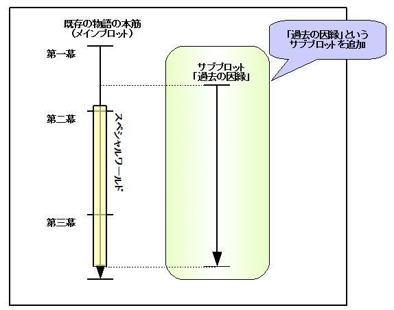
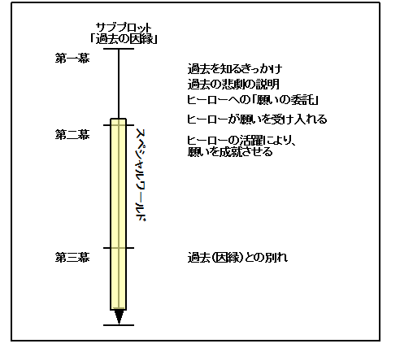
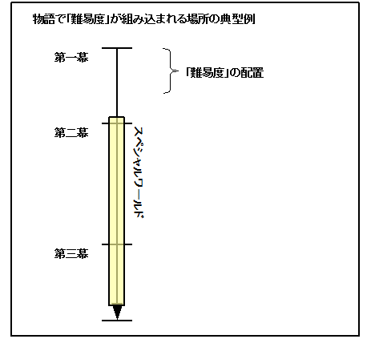
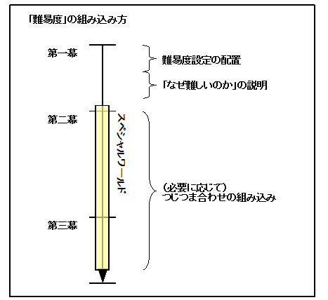
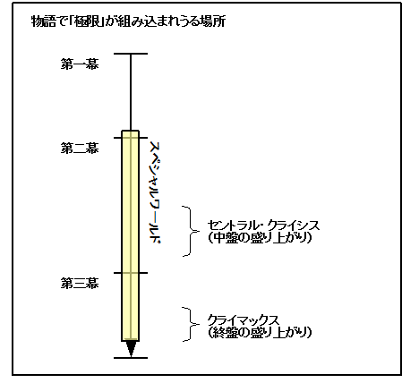
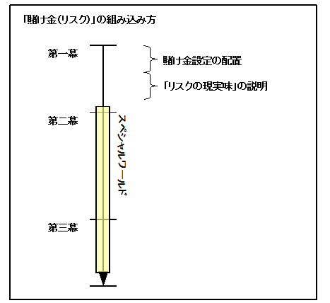
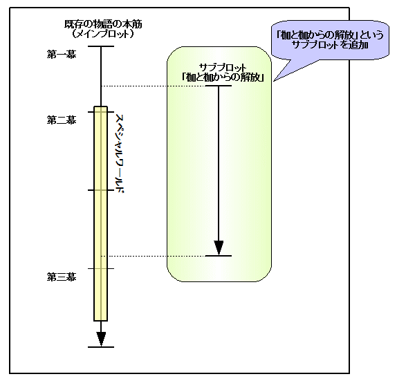
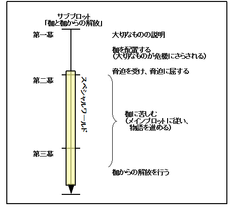

| 貴方のシナリオをもっと盛り上げる、五つのプロットテクニック | |
| 中村あやえもん | |
| Ayaemo kenkyusyo (2014) | |
貴方のシナリオをもっと盛り上げる、五つのプロットテクニック
中村あやえもん
Copyright © 2011, 2014-2015 Ayaemo Research Institute. All rights reserved. Including the right to reproduce this book or portions thereof, in any form. No part of this text may be reproduced in any form without the express written permission of the author.
Version 2015.8.20
（本書は、二〇一一年に「シナリオを盛り上げる五つの技術」と題してリリースされた教材を、電子書籍化に伴って改題したものです）
本書は、ライトノベルや児童文学などの「若者向け」のシナリオ制作に携わるシナリオライターや小説家、脚本家を対象とした、物語の「盛り上げ方」について説明しています。物語のメインプロット（本筋）をほとんど修正することなく、物語をより盛り上げる、そのような追加可能な要素の説明と、その追加方法を説明しています。
これによって、物語に幅を持たせて、白熱した展開にし、感動やスリルをより強化できるようになるでしょう。
本書では、以下のような内容を学べるでしょう。
「盛り上げる」というのは、言い方を変えると「極端にする」とも言えます。物語をより極端にすると、派手になって盛り上がるというわけです。
大人な雰囲気の物語では、物語の極端さや派手さは控えめにすることで、落ち着いて、現実的な雰囲気を作ることができます。いわば、極端にせずに無駄な盛り上げは含まないことで、リアリティのある「大人の雰囲気」を作ることができます。
逆に、若者向けの物語では、リアリティよりも、派手さや極端さが求められるものです。物語において、極端さを激しくして話を盛り上げれば盛り上げるほど、それだけ起伏ができて派手な内容になります。
例えばヒロインが学校一の美少女であったり、主人公が派手にバトルを繰り広げたりと、若者向けでは現実ではありえないような設定や状況が多く用いられるものです。
これは、若者向けの現場では、リアリティよりも、ある種の派手さ、極端さの方が求められているためですね。緻密な技巧よりも、エネルギーの方が重視される世界だとも言えるでしょう。
シナリオに限らず、この「大人向け」と「若者向け」の違いは、様々な分野で同じ傾向にあるものです。
つまり、大人向けであればあるほど極端さや派手さは少なくなるものですが、若者向けになればなるほど、大人っぽいリアリティよりも、ある種の「派手さ」「極端さ」を組み込むスキルが重要になります。
特に、ライトノベルや児童文学などの若者向けの物語であればあるほど、そのような派手さ、極端さを作り出す「盛り上げる技術」を身につけることが重要になってきます。
では、「盛り上げる」とはどのような技術になるのでしょうか。
先にも説明しましたが、「盛り上げる」というのは、見方を変えると「物事を極端にする」とも言えます。
それぞれの状況を極端に見せることもあるでしょうし、目的を極端にすることもあるでしょう。これから主人公が進む道のりの険しさを極端に見せることもあるでしょう。
盛り上げる技術の一つとして、「難易度」があります。これは主人公の置かれている状況をより極端に見せることによって、より盛り上げる技術になります。
例えば、学園ものの恋愛物語があったとしましょう。主人公がヒロインの少女に恋をします。ところが、もしそのヒロインが「恋に飢えていて誰でもＯＫな状態」の女の子だったら、物語としては面白みも何もなくなります。
ですが、例えばヒロインが「学校中で一番人気のある容姿端麗、成績優秀、性格も抜群で、今までどんな美男子からの誘惑も受けなかった清楚な女の子」というように、状況を極端にしてみたらどうでしょう。主人公がヒロインと結ばれるにはぐっと難易度が上がり、面白そうに感じるでしょう。
そこでさらに、極端さを大きくしてみましょう。例えば主人公が不運な事故にあって、顔面がただれてしまったとしましょう。周囲から怖がられて誰も近づきたくなくなるような姿になってしまうのです。その上、事故の影響で、言葉もなかなか上手く発音できないことが多く、体もうまく操れないことが時々あり、成績も急降下して、完全に元に戻るまでに二～三年はかかる、といった状態にできるかもしれません。
相手は学校で最も綺麗で、人気もあり、誰からも憧れる存在。ですが主人公は学校内で最もかっこよさからは遠い存在で、怖がられて、避けられる存在。ここまでやると、難易度は極めて高くなるでしょう。ですが、これぐらい難易度が高くなると、恋物語としてとても面白そうに感じるものです。
このように、状況をより極端にする（盛り上げる）ことで、面白さを強化することができるのです。
他にも、様々な盛り上げる（極端にする）技術があります。
例えば主人公と敵が戦うバトル物語があったとして、主人公がただ私怨で戦うだけではなく、それが主人公の恋人など、「主人公にとって大切な人の運命」をも左右するという内容にできるかもしれません。そうすることによって、主人公が戦う理由に強い意味が生まれます。これは「目的」を極端にすることになります。
他の例で言うと、主人公がスポーツで試合をしていたとしましょう。主人公がピンチになった時、ただ負けるだけでは盛り上がりません。そこで、「負けたら大切なものを失う」「負けたら命を失う」「負けたら恋人を失う」といったリスクを負わせることで、負けられない戦いになり、緊張感が増します。これは、「リスク」を極端にすることになります。
また、勝負に劣勢になっている時、ただ状況的に劣勢にするのではなく、体力的にも精神的にも限界を迎えさせることで、より盛り上げることができます。これも状況を極端にする一つの方法でしょう。
このように、「盛り上げる」という技術は、物語中に上記のような「極端さ」を埋め込むことでもあります。圧倒的に劣勢な状況から逆転したり、主人公が勝つことは自分のためだけでなく、恋人を救ったり、町を救ったり、時には世界を救ったりする......といったものですね。
それによって、メインプロットをより劇的に、より魅力的に、より派手に見せるというアプローチです。
「中盤や終盤が、いまいち盛り上がらない」「どうも物語がこぢんまりしていて、地味になっている」「面白みを追加したい」「もっとメリハリを付けたい」「劇的な展開にしたい」......そういった不満がある場合、本書で説明する「盛り上げる方法」を組み込むことで、解決の一助にできるでしょう。
本書はそのような「盛り上げる技術」を五つほど紹介します。
これらは全て組み合わせて追加可能なので、メインプロットにほとんど手を加えることなく、簡単に組み込むことができるものです。
この「盛り上げる技術」は、物語中に「戦い（バトル）」や「勝負」という要素や、「競争」という要素を含んでいたりする物語には特に相性がよく使えるでしょう。もちろん、恋愛やサスペンスにも用いることができます。「盛り上げる技術」とは、「感動や緊迫感をより強化する技術」と言えるでしょう。
本書の対象者は、ある程度シナリオライティングに関わっている中～上級者向けです。
これから紹介する「盛り上げる技術」は、物語のメインプロットがなければ追加することができません。言い換えると、物語メインプロットをしっかりと構成することができる人でなければ、本書は役に立ちません。
本書は物語をこれまで何本も仕上げてきたことがある人を前提として説明しています。そのため、まだ上手く作品を仕上げられない入門者の方は、まずはメインプロットを作るために拙著「シナリオの方程式」もしくは「サスペンスの方程式」辺りからご覧になることをオススメします。
また、本書で説明している内容は、先述したように「若者向け」において効果を発揮する技術です。大人向けな、落ち着いた雰囲気のシナリオを作りたい方には大きな効果は発揮できないと思いますので、ご注意下さい。
私の感覚で言うと、シナリオの成功を左右する最も大きな要因は、メインプロットの善し悪しです。その次に重要になるのが、この「盛り上げる技術」だと思っています。
それぐらい、「盛り上げる技術」は重要なウェイトを占める技術だと思っています。是非しっかりとマスターして、シナリオ作りの一助にして頂ければと思います。
さあ、それではここから、「盛り上げる」という技術を見ていきましょう。
本書が少しでも糧になれば、嬉しいです。
● はじめに
● 目次
● 第一章 「盛り上がり」の技術概要
● 第二章 技術その一：「因縁」
● 第三章 技術その二：「難易度」
● 第四章 技術その三：「極限」
● 第五章 技術その四：「賭け金（リスク）」
○ 「賭け金（リスク）」とは
○ 「賭け金（リスク）」の作り方
○ 応用例：「枷と枷からの解放」とは
○ 応用例「枷と枷からの解放」の作り方
○ 「賭け金（リスク）」の使用具体例
○ 「枷と枷からの解放」の使用具体例
● 第六章 技術その五：「自尊心」
○ 「自尊心」とは
○ 「自尊心」の作り方
○ 「自尊心」の応用：「相手の評価を落とす」
○ 「自尊心」の応用の応用：「サブプロットとして追加する」
○ 「難易度」との組み合わせについて
○ 「自尊心」の使用具体例
● 付録：重ね合わせた後のシナリオ例
● あとがき
● 参考文献
● おくづけ
「はじめに」でも少し触れましたが、盛り上がりを組み込む方法として、以下の五つの技術があります。
それぞれを簡単に紹介しましょう。なお、「ヒーロー」「シャドウ」という用語を用いていますが、「ヒーロー」は主人公、「シャドウ」は敵対者と思って頂いて構いません「ヒーロー」「シャドウ」についての詳細は、拙著「シナリオの方程式――良質なシナリオを、半自動で作り出す方法」を参照して下さい。
これらの技術を組み合わせて、物語に組み込むことで、より物語を盛り上げることができるようになります。
なお、本書で説明している全ての技術は、お互いに影響し合わない関係にあるので、自由に組み合わせて配置することが可能です。
それでは実際に、次章からそれぞれの方法について見ていくことにしましょう。
「因縁」という盛り上げる技術は、メインプロットに関連した過去の出来事を追加することで、メインプロットをより盛り上げる技術になります。
物語において、ヒーローは何かしらの目的を持って行動します。それは恋を成就させることかもしれませんし、敵を打ち負かすことかもしれません。自分の夢を叶えることかもしれません。
そのような一つの「目的」があるわけですが、この「因縁」という技術は、その「目的をさらに強化する」アプローチで盛り上げる技術、と言えるでしょう。
「因縁」では、主人公が目的を達成することは、主人公だけではなく他の人にとっても願っているのだという内容を追加します。これによって、苦しみや喜びを他の人物とも共有して、より喜びや悲しみの総量を増やすという方法になります。
これは具体例で説明した方が分かりやすいので、この技術を例で見てみましょう。
例えば、主人公が囲碁に興味を持ち、囲碁で強敵と戦いながらも成長していくような物語があったとしましょう。
すると、例えば「先祖の霊」を物語に追加して、「その霊は、囲碁を極めたかったけど、道半ばにして殺されてしまった」といった悲劇のエピソードを追加します。そしてその霊は主人公と出会い、囲碁に興味を持つ主人公に願いを託します。主人公が囲碁を極めることは、その霊にとっても願いを叶えることになるのです。
これによって、主人公は霊から力を得ることもあるかもしれませんし、激しい逆境の中でも精神的な支えを得ることもあるかもしれません。
そして主人公の目的を達成することは、その霊の願いを成就させることでもあります。すると、因縁である霊との別れを物語に組み込んで、感動を深めることもできるでしょう。
このように、主人公が一人で戦うのではなく、主人公が為そうとすることに対して、過去に因縁を持った存在を重ねるのです。それによって、メインプロットにより厚みを加えることができます。
他の例で言うと、例えば高校サッカーの物語があったとしましょう。主人公が国立競技場で、敵に見下されて悔しい思いをしながらも、敵に打ち勝つという流れがあったとします。敵も主人公の頑張りに感化されて、見下したことを謝る......という内容だったとしましょう。
これでは少し物足りないと感じて、「因縁」を追加したとしましょう。そして、主人公と敵役の間に過去の因縁となる出来事を追加するようにします。「主人公と敵役とは小さな頃に親友同士だったけど、離ればなれになってしまった。その別れの時に、『国立競技場で会おう』と約束した」というような内容を追加したとしましょう。
国立競技場に来て敵役と対戦することになったはいいものの、主人公は調子を出せずに苦しみます。敵役は実力を出し切れない主人公に落胆して、主人公に対して冷たく当たります。それは「本当はあの約束を叶えたかったから」という動機で、敵役は主人公を見下すようにするわけですね。
しかし主人公が何らかのきっかけで吹っ切れて、敵役に打ち勝つでしょう。その時に、敵役も「そんな主人公と戦いたかったんだ」と主人公を認めて、約束を果たせて、過去の暖かい記憶を二人で共有します。そして残りわずかな時間を精一杯、主人公と敵役は最高の仲間でありライバルとして競い合い、高め合う......そういった美しい演出を追加することも可能になるでしょう。
このように、メインプロットに関連した過去の出来事を追加することによって、元々ある物語にさらに意味を加えて、物語を盛り上げることができます。
これは見方を変えると、メインプロットに対して、「過去の因縁」というサブプロットを追加する、と表現こともできるでしょう。つまり、メインプロットと「因縁」で追加する内容の関係は、次図のように示すことができます。

このように「因縁」とは、サブプロットをもう一つ用意することで、シナリオにさらに厚みを加える技術とも言えます。言い換えると「二本の物語を並列して進行させる」と表現することもできます。つまり、一本分のシナリオで二本分のシナリオを楽しめるということですね。なので、より密度の濃い内容にすることができるでしょう。
メインプロットの内容が薄い時には、特に役立つ技術になるでしょう。
前項で説明したように、「因縁」を追加することはサブプロットの追加と同義なので、一本の物語として作って追加するという形も可能です。サブプロットの作り方はいくつもありますので、自分のスタイルに合った作り方で作るとよいでしょう。
ここでは、簡単にサブプロットを追加できる一つの手法を紹介しましょう。
「因縁」は、以下のような六つのステップで追加することができます。
以下でそれぞれのステップの詳細を説明しましょう。
まず最初に、「過去の出来事」を作ります。
「過去の出来事」は、主人公がメインプロットで為そうとしていることを、過去にできなかったという悲劇的出来事を用意します。その「過去にそれを為そうとした人物」をここでは「先人」と呼ぶことにしましょう。
例えばメインプロットでヒーローが主人公とした場合、主人公の目的は、恋愛物語では思い人と結ばれることかもしれません。バトルを含むものでは、人々に危害を加えようとする敵対勢力や殺人鬼を討ち果たすことかもしれません。
先人は、主人公の父親や母親、先祖かもしれません。もしくは主人公と似たような境遇にある人かもしれませんし、場合によっては主人公自身の幼い時代かもしれません。何かしら、先人には主人公と重なる要素を用意します。
彼らは主人公と同じく心からそれの実現を願い、為そうとしたけれども、何かのきっかけ（間の悪い事故や事件、病などの原因）によって実現できなかったという結末に終わります。
恋愛物語で主人公が恋敵に邪魔されるのであれば、「祖母は若い頃に思い人の青年がいて、互いに思う間柄だった。しかし恋敵の策略にはまって二人は引き離されてしまい、二度と会うことはできなくなってしまった」といった出来事を追加するのです。
他の物語では、「主人公の父親が魔王に立ち向かったけど、あと少しのところで、巧妙な罠にはまって殺されてしまった」「尊敬する師匠は超一流のサッカープレイヤーだったが、唯一○○杯での優勝が実現できなかった」「幼い頃に、また明日この公園で遊ぼうと約束したけど、不運な事故で実現できなかった」といったものがあるかもしれません。
このように、メインプロットの内容をなぞらえるようにした、けれども実現できずに終わったという過去の出来事を配置します。
また、大切なのは「ヒーローがメインプロットで達成しようとしていることが、同時に先人の願いを達成することでもある」という形にすることです。つまり、ヒーローがメインプロットの目的を達成することが、自動的に先人の願いを叶えることでもあるとするのです。
例えばヒーローとなる主人公がいたとして、「主人公とヒロインが結ばれること」が物語の目的であれば、先人の願いは「主人公とヒロインが結ばれること」であるとするわけですね。主人公が「魔王を倒して平和をもたらすこと」を目的としているのであれば、先人の願いも同じように「魔王を倒して平和をもたらすこと」とします。
もしこのような形にしなければ、因縁は主人公にとって邪魔な存在になり、足を引っ張る「余計な物」になってしまいます。先人の願いは力こそなれ、足を引っ張ることはない方が望ましいでしょう。
ところで、この過去の出来事を配置する際に、「約束」という象徴が多く用いられます。
例えば先人が思い人と愛し合っていたのなら、「○月○日の辰の刻、あの桜の下で会おう。そこで大切なことを伝えたいんだ」という約束をしているかもしれません。スポーツものでは、幼い頃に「甲子園でまた会おう」といった約束をしているかもしれません。
ですが、この約束が実現できずに、「果たせなかった約束」となるわけですね。
このように「果たせなかった約束」を象徴として用いることで、過去の出来事をより分かりやすく伝えることができるでしょう。
また、約束という形で具現化しておくことで、後ほど説明する「因縁との別れ」を「約束を果たす」という行動によって綺麗にまとめることができるようになります。
ステップ一で過去の出来事を作ることができたら、その出来事を元にして、メインプロットに「因縁」のサブプロットを組み込んでゆきます。
「因縁」のサブプロットは、次のような展開になるでしょう。以下の内容をシナリオに追加していくことになります。

これらを時系列的な流れで表現すると、上図のようにできるでしょう。
この順番さえ合っていれば、この内容を組み込む場所はメインプロットのどこでも構いません。都合のいい場所で組み込むようにしましょう。特に、シナリオの密度が薄い場所に挿入すると、厚みを加えられて効果的です。
メインプロットとサブプロットは並行して進行することが可能です。もちろん、メインプロットの進行をいったん止めて、サブプロットを進めても大丈夫です。好きな形で物語を展開させるとよいでしょう。
最初の「過去を知るきっかけ」は、どのようにしてヒーローがステップ一で作った過去の出来事に触れるのかという内容になります。
ある時、ヒーローの元にヘラルド（使者）が訪れることでヒーローは過去を知るきっかけを得るでしょう。ヘラルドは「主人公への依頼」という形で過去の出来事に関連する人物が訪れてくるかもしれませんし、「思い出話」ということで身近な人から話を聞かされるかもしれません。「祖母からの手紙が見つかる」という形や、「幽霊」という形で主人公の前に姿を現すかもしれません。また、過去の出来事が主人公自身に起こった出来事なら、ちょっとした出来事で過去のそのことを思い出すかもしれません。
このように、メインプロット内に何らかの過去を知るきっかけを配置することによって、サブプロットである「過去の因縁」へと突入します。
次に配置する物が、過去の出来事そのものです。
ステップ一で作った過去の内容を、読み手やヒーローに示します。
なお、この出来事を配置する場合に重要なのが、以下の三つの内容を明確にしておくことです。
最初の「幸せな状態の描写」は、これが事前に配置されていることで、後ほどその幸せが続くことを強めることができます。
恋愛ものであれば、思い人と一緒に幸せな時を過ごすことかもしれません。魔王が町を襲う前であれば、平穏な町の生活を描くことかもしれません。つらい時に、仲間と心を一つにして励まし合っている状態かもしれません。
「思い人と一緒にいること」や「町の平和」「心の繋がり」による幸せを一度感じさせることによって、後ほどそれを失った時、強く「その幸せを得たい」と願うようにすることができます。
ここでは、「絆」や「約束」といった象徴を用いることで、繋がりの大切さや温もりを読み手に示すとよいでしょう。
「その幸せが壊されるきっかけ」で、ステップ一で作った過去の悲劇を説明します。先人は思い人に告白する約束をしたけれども、恋敵の罠にはまってしまうことかもしれません。魔王が復活して町を襲うことかもしれません。幼い主人公が風邪を引いて、約束の場所に行けないことかもしれません。
先人はもちろん、全力で運命にあらがおうと抵抗しようとするでしょう。ですが敵の策略は狡猾を極めていたり、状況や事情によって自分の力では運命を変えることはできずに終わります。
それによって、先人はありとあらゆる幸せが打ち壊され、絶望にうちひしがれます。
最後の「その幸せの実現を強く願うこと」は、幸せが失われてしまったことで、先人が「自分に為し得なかったこと」を強く願うようになります。
それは強烈な後悔かもしれませんし、自責の苦しみかもしれません。そのような「幸せが失われたことによる苦しみ」を示すことで、幸せへの願望を強めます。
このように、過去の内容を読み手に示します。
過去の悲劇を説明し終わったら、その後に主人公への「願いの委託」を配置します。
この段階で重要なのは、以下の二点です。
ヒーローは自分の境遇と先人の境遇に重なる物があったら、共感して感情移入できるものです。そこでヒーローが達成しようとしていることを応援してくれて、そして足を引っ張るものではないと分かれば、ヒーローは引き受けない理由はないでしょう。
こうすることで、先人はヒーローに「願いを委託」します。主人公はそれを受け入れ、先人のためにも自分の目的を達成する想いを強化させます。
なお、ヒーローが同情しやすい性格であったり、人に尽くすことが自分の喜びになるのであればスムーズに先人の願いを引き受けるでしょう。
ですが、ヒーローの性格によっては、厄介ごとや人の依頼を受けたがらないこともあるでしょう。
そんなときは、ヒーローが願いを背負うことの動機付けを用意するとよいでしょう。
先人から知恵や力、有効なアイテムを得ることもあります。また、知恵や力だけでなく、「恋心」や「お金」「名誉」「美人な依頼主の気を惹きたい」といった「下心」になる場合もあるでしょう。
また、動機付けは「苦痛を避ける」といった形でもあります。協力しなければ周囲の人に悪い印象を与えそうだとか、世間体に問題が出るとか、祟（たた）られそうだとか、ヒーローにとって不利な状況になる場合もあるでしょう。
このように何らかの動機付けをして、しっかりと先人の願いを引き受けるようにしておきましょう。
先人の願いを引き受けたら、ヒーローは自分の目的に向かってメインプロットを進めます。メインプロットを進めることが、「因縁」のサブプロットを進めることにもなります。
なお、ヒーローが願いを引き受け入れたら、場合によってはサブプロットにおける仲間がつくこともあります。それはヘラルド自身や、ヘラルドに忠実な手下であるかもしれません。
例えば願いを携えてきた使者が、その願いの実現を協力するために主人公について行くという形になることもあるでしょう。ヘラルドが幽霊という形なら、主人公にまとわりつくかもしれません。
そして、その仲間の力を借りることで、トラブルを解決できた......といったエピソードを追加することもできるでしょう。
また、その仲間とのやりとりでネタも作れるので、より厚みのある物語にすることができるでしょう。
そして、メインプロットでヒーローが目的を達成することで、「因縁」のサブプロットの目的も同時に達成します。
この部分はメインプロットと同期して進められるので、特に問題なく進められるでしょう。
ヒーローが目的を達成したら、後はサブプロットを終結させるだけです。
ヒーローが過去（因縁）との別れを行う場面を追加します。
因縁を解決できたことで、ヒーローは過去にけりを付けます。それは先人の墓参りをして報告するかもしれませんし、約束を果たしたことを先人に伝えるかもしれません。場合によっては、主人公が幼い主人公と夢の中で対話して、泣いている幼い自分を受け入れて一つになる......といった象徴で表現されるかもしれません。
もし因縁絡みで仲間ができていたら、その仲間との別れがあるでしょう。ヒーローは感謝され、先人が叶えうる精一杯の謝礼を受ける場合もあるでしょう。例えば先人が幽霊の場合、自分自身の魂をなげうって、主人公の大切にしていたけれども枯れてしまった花を生き返らせて、花を咲かせるかもしれません。そういった演出もできるでしょう。
主人公は全ての問題を解決できたことを知り、今までの大変だったけれども、楽しかった旅を振り返るかもしれません。別れたくないような感情も浮かぶかもしれません。
ですが、別れの時はやってきます。主人公は別れを受け入れ、感謝しつつ因縁と別れます。
ここは見せ方次第で大きな感動を与えることができます。しっかりと作って、サブプロットを終結させましょう。
以上のステップで「因縁」のサブプロットを作り、メインプロットに組み込むことができます。
「因縁」を実際に追加する制作例を以下に示しましょう。
まずは、以下のような、面白みのない簡素なメインプロットがあったとしましょう。あまり盛り上がりそうにない、厚みのない単純な恋愛物語です。
現代日本の恋愛物語。主人公は高校一年生の少女。面倒見がいいけど、控えめな性格。
高校一年になったばかりの春の日、隣の家に家族が引っ越して来る。その家族には同い年のかっこいい青年がいて、知り合う。
お互いの両親同士がすごく仲良くなる。青年は外見のかっこよさとは違ってデリカシーがなくて、ズケズケと主人公の領域に入り込んでくる。両親は大喜びだけど、主人公は大迷惑。でも主人公は言い出せない。
だけどある日、青年は青年の親を喜ばせたくてやっているのだと知り、デリカシーはないけど優しい人だと知る。そこから恋心が動き始める。
青年がズケズケと来る日々をやり過ごしながら毎日を送るが、ついにある日、主人公は大切にしていたものを壊されてしまい、怒って青年を拒否する。
すると青年は来なくなり、主人公は寂しい思いをする。青年に甘えていた自分に気が付く。
ある日、青年が重病を患って、主人公が青年の元に見舞いに行く。青年の苦しむ姿を見て、青年が謝って「居心地がよかったんだ」と本音を語るのをきっかけにして、主人公も謝って、そして仲直りして結ばれてハッピーエンド。
さて、それではこれに、「因縁」のサブプロットを追加してみましょう。
サブプロットの作り方はいくつもありますが、本書で説明した方法を使って追加してみます。
それでは過去の悲劇を作ってみましょう。
千年前の過去でも、百年前でも、十年前でも、二年前でも、何でもいいでしょう。
千年前という設定なら「家柄」といった設定を追加して、主人公は代々何々の家柄の娘、とさせることができるでしょう。そしてその家柄の人は、どの家柄の人とは敵対しているなどとして、結ばれないような悲劇を追加するのもいいかもしれません。そこで、過去の文献でも見つけて、その風習を壊すのが先祖代々の願いだったと知ることもできるかもしれません。
百年前という設定なら、女性の幽霊にでも登場してもらって、青年が昔恋した人にそっくりだから、「体を貸してくれ。青年とキスさせてくれれば成仏する」といった無茶な話を持ちかけてくるかもしれません。
十年前なら、主人公自身か、もしくは主人公に近い兄姉の悲劇話を追加できるでしょう。主人公自身なら、過去に幼い青年と結婚を約束して、直後に青年は引っ越して別れてしまったとかいう（小さい悲劇ですが）悲劇話を追加します。そして主人公にだけ見える「幼い自分（主人公）」を幻として登場させて、「結婚を成就させて」と無茶な要求をしてくる形にできるかもしれません。主人公はその出来事を忘れていて、「幼い自分」が誰か分からないようにするのも面白いかもしれませんし、逆に主人公だけが覚えているという形にするのもいいかもしれません。
二年前なら、主人公自身の過去の悲劇になるでしょう。愛し合っていたけれども、引き離されてしまったとします。そこで青年が戻ってくることで、再びそれに挑む......といった形にできるかもしれません。
このように、状況に応じて様々な「因縁」のサブプロットを用意できるでしょう。
今回の例のように、メインプロットのインパクトが強くない場合、サブプロットでそれを補強することも可能になるのです。
ここでは十年前の設定を用いることにしましょう。主人公も青年も、双方が約束を覚えているとします。だけど、青年は昔とは随分性格が変わってしまった（ように見える）とします。
過去を知るきっかけは、そのまま青年が引っ越してきて少しした後に引き起こすとします。最初は主人公は青年のことを覚えておらず、「幼い自分」が幻として登場することで、彼女から話を聞き出して思い出すという形にします。
「幼い自分」によって、昔の出来事が語られます。幸せだった日々と、結婚の約束をしたこと。だけど叶えられずに引っ越してしまったこと、などですね。
「幼い自分」から、願いを託されます。主人公は恥ずかしさもあって、最初は「そんな無茶な」と拒否しますが、「幼い自分」から呪われて、災厄が次々と起こるとします。例えば「勉強なんか面白くないからやめちゃえ」と、勉強道具を窓から投げ捨てられるとか。考えたことを素直に行動に出し過ぎる「幼い自分」に対して、主人公は頭を痛めるようにします。
そしてメインプロットで、主人公が青年の優しさを知ることをきっかけに、「幼い自分」の願いを渋々受け入れることにします。「幼い自分」は大喜び。主人公は幼い自分に対して、「お前なんかさっさと消えてしまえ」と思ってるとしましょう。
「幼い自分」の願い（恋を成就させたい思い）と、自分自身の平穏（恋心を否定したい気持ち）の間に挟まれながらも、少しずつ青年と近づいてゆきます。
そしてメインプロットで青年は来なくなり、主人公は寂しい思いをする段階では、「幼い自分」が主人公を責めるようにします。主人公と幼い自分を口論させて、より盛り上げます。
その後、メインプロットで青年が重病になって、素直になって結ばれた後、「幼い自分」とも和解させます。
最後に、「幼い自分」との別れを追加します。
最初は「お前なんかさっさと消えてしまえ」と思っていたけども、次第に幼い自分を憎めなくなり、切ない気持ちになります。
そして別れ際に、「幼い自分」が主人公の体を乗っ取って悪戯し、主人公を青年にキスさせる。それが精一杯の、主人公へのお礼だとして、消えます。
主人公の中に、幼い自分が脈打っていることを感じて、メインプロット終了と同時にサブプロットも終了させます。
以上より、メインプロットと「因縁」のサブプロットを合わせたシナリオは、以下のようにできるでしょう。
恋愛物語。主人公は高校一年生の少女。面倒見がいいけど、控えめな性格。
高校一年になったばかりの春の日、隣の家に家族が引っ越して来る。その家族には同い年のかっこいい青年がいて、知り合う。
お互いの両親同士がすごく仲良くなる。青年は外見のかっこよさとは違ってデリカシーがなくて、ズケズケと主人公の領域に入り込んでくる。両親は大喜びだけど、主人公は大迷惑。でも主人公は言い出せない。
青年が引っ越して来てしばらくして、主人公の前に幼い少女が目の前に現れる。それは幻だけど、主人公に話しかけてきて、会話ができる。
その女の子は幼い頃の自分だと気が付いて、ある「願い」を主人公にお願いする。それは、隣に引っ越してきた青年とは過去に出会っていて、過去に彼と結婚を約束したということ。そして願いとは、その結婚の約束を成就させること。
主人公は過去を思い出すけど、突然のことに、恥ずかしさもあって全力で拒否。すると女の子は主人公を呪って災厄を起こし続けるが、とにかく主人公は我慢する。
ある日、青年は青年の親を喜ばせたくてやっているのだと知り、デリカシーはないけど優しい人だと知る。そこから恋心が動き始める。同時に、女の子の災厄にも耐えきれなくなり、ついに女の子の「願い」を引き受けることになる。
青年がズケズケと来る日々をやり過ごしながら毎日を送る。主人公は反発するけど、女の子は歓迎するので、青年だけでなく、女の子とのバトルも勃発する。
ついにある日、主人公は大切にしていたものを壊されてしまい、怒って青年を拒否する。女の子に対しても拒絶して、一人閉じこもる。
すると青年は来なくなり、女の子もショックを受けて、哀しんで立ち去る。急に静かになって、主人公は寂しい思いをする。青年や女の子に甘えていた自分に気が付く。
ある日、青年が重病を患って、主人公が青年の元に見舞いに行く。青年の苦しむ姿を見て、青年が謝って「居心地がよかったんだ」と本音を語るのをきっかけにして、主人公も謝って、そして仲直りする。
最後に女の子に謝ると、女の子は現れる。だけど、「これで目的を果たしたから、お別れね」と言う。女の子は主人公の体を乗っ取って、青年にキスをする。それが「自分にできる最大限のお礼」として、女の子は消える。主人公は、女の子のことが大好きだと伝える。
主人公は自分の中に女の子の温もりがあることを知って、青年とも結ばれて、ハッピーエンド。
このように、「幼い自分」とのやりとり（サブプロット）を追加することよって、簡素な物語だったのが、より厚みのある物語ができました。
これはメインプロットの「目的」がいまいち盛り上がらない場合、特に有効になるでしょう。
「難易度」という盛り上げる技術は、物語の導入部分において、ヒーローが為そうとしていることがどれほど難しいかを示すことによって、緊張感をより高める技術になります。「難しさ」をより極端にすることで、派手に盛り上げようというアプローチですね。
「難易度」は主に導入部分において効果を発揮するので、これを上手く組み込むことで、「読み手により物語に強く関心を引かせる」という、より強力な「つかみ」が実現できるでしょう。
物語においては、ヒーローが為そうとしていることの難易度が高ければ高いほど、読み手は「本当にできるのだろうか」とハラハラします。逆に、読み手にとってヒーローが簡単にできそうなことであれば、それは緊張感も何もなくて、物語として面白みがなくなるというのは、直感で分かると思います。
「はじめに」でも例として挙げましたが、学園ものの恋愛物語で、ヒロインが恋に飢えていて誰でもＯＫな状態の女の子だったら、面白くありません。
ですが、ヒロインが「学校中で一番人気のある容姿端麗、成績優秀、性格も抜群で、今までどんな美男子からの誘惑も受けない清楚な女の子」とすると、難易度が上がります。
さらに、主人公は事故によって「フランケンシュタイン」に出てくる怪物のように顔面がただれてしまったり、それによって恐れられる存在になってしまったとすると、難易度は極めて高くなります。すると、状況がより極端に、派手になり、面白そうに感じるものです。
他にも、例えばスポーツものやバトルものなどの小説や映画でも、戦いに入る前に敵がどれぐらい強いのか、これから為そうとしていることがどれほど難しいのかを延々と説明することが多くあります。
格闘技の物語なら、敵の試合のビデオを持ってきて、見るでしょう。そして敵が圧倒的な強さを見せつけて勝つのです。そして主人公の先輩や師匠が、その敵がどれほど強いのかを示し、一方で主人公がどれだけ勝てないかを解説するでしょう。
時には周囲の人が主人公を心配して「やめて！ こんなの絶対に無理よ！」と主人公を止めることもあるかもしれません。
それは、難易度を高くすればするほど盛り上がるためですね。そのように難易度を設定することで、より物語を盛り上げることができます。
このように「難易度」という技術は、メインプロットの導入部分において、ヒーローに対する苦難の度合い（難易度）を高めます。これによって、読み手をより物語に引き込むという技術になります。
「難易度」が組み込まれる場所の典型例を、次図に示します。

「難易度」は、序盤に持ってくる派手さとして、よく物語序盤の「つかみ」として用いられます。そのため、物語のキャッチコピーでも「難易度」が頻繁に使われています。
例えば、恋愛物語でも「一方は金持ちのお嬢様、一方は極貧のダメ男」「一人は脚光を浴びる若手人気俳優、一人は何をやっても冴えないオタク女」としたり、音楽の青春物語でも「音楽を始めたばかりの少女、夢は武道館ライブ!?」とか、格闘技の物語なら、「いじめられてばかりの最弱の少年が、地区最強のカリスマ空手少年に挑む!?」とでも短いキャッチを作ると、物語の内容を端的に表せて、かつ興味を持ってもらえる強い「つかみ」となります。
「難易度」は、以下の三ステップで組み込むことが可能です。
以下でそれぞれのステップについて詳しく説明します。
まずはメインプロットがあったとすると、そこに難易度の設定を加えます。
難易度の設定を加えるために、まずはその物語におけるヒーローが何を為そうとしてるのかという点に着目して、そこから適切な「難易度の評価軸」を見極める必要があります。
「難易度の評価軸」とは、「この状態だったら物語の目的を達成するのに有利」「この状態だったら物語の目的を達成するのに不利」という、そのような有利不利の軸を決めます。
例えば恋愛ものなら、ヒロインの女性と結ばれるためには、どの状態だったら物語の目的を達成するのに有利で、どの状態だったら不利でしょうか。ヒロインが「お金持ちで美人で成績がいい」のなら、その相手役としては、おそらく同じように「お金持ちで美男子で成績がいい」方が、近づきやすくて有利かもしれません。逆に、その正反対である「貧乏でかっこ悪くて成績もよくない」のは不利になるでしょう。
スポーツものや勝負ものの方が、有利不利が分かりやすいかもしれません。例えばボクシングで言うと、「パンチ力が強い方が有利」「動きのスピードが速い方が有利」などと、いろいろと有利不利がはっきりしています。そこで、例えば「スピード勝負」という敵側に有利な土俵を用意して、パンチ力しか能がない主人公にとっては不利にできるでしょう。その場合、「スピード」が難易度の評価軸になるわけですね。
恋愛ものでよくあるのが、「最悪の出会い方」というものです。恋愛し合う二人のはずなのに、最初に共にイメージが悪く出会ってしまったり、ケンカしてしまったり、敵対してしまったりします。これも「出会い方」という面での評価軸になるでしょう。
このように評価軸を決めた上で、難易度を設定します。ヒーローをその評価軸でどの辺りに置くのかを決めます。
最も派手に盛り上がるのは、難易度が最高の状態です。最も盛り上がらない、言い方を変えると最も穏やかで静かに物語が進むのは、難易度が低い状態です。
最高に盛り上げたいのであれば、ヒーローをその評価軸においてどん底までたたき落とすことです。既存のメインプロットの設定など「生ぬるい」と言えるぐらい、とことんまで不利にさせるとよいでしょう。
ヒーローが中間辺りに位置するのなら、最下位に落とします。経験が少しある程度の設定であれば、ド素人に設定を変更することも考えてみましょう。
例えば主人公がヒーローとなり、軽音楽部に入って音楽バンドをするような成長物語があったとしましょう。その物語では、「音楽が上手かどうかが物語の目的を達成するための有利不利を決める」という評価軸だったとしましょう。
すると普通なら「人並み程度に音楽に触れたことがある」程度の難易度かもしれません。ですがそこで思い切って「音楽センス皆無」であったり、「楽器は何もできない。経験もない。今まで幼稚園のカスタネットしかやったことがない」と設定を変更します。すると読み手は、「本当にこんな子が軽音楽部のバンドに入って大丈夫なの!?」とワクワクすることになります。
マラソンの物語があったとすると、評価軸は「順位と当日の体調」としたとしましょう。マラソンの試合が始まった直後に主人公を転倒させて、最下位まで落とします。そして怪我を負わせたり、その日の体調を悪くさせることもできるでしょう。そうすることによって、「順位と体調が全ての状態から、本当に大丈夫なの!?」と盛り上げることができるようになります。
このように、評価軸を決めた上で、難易度を設定します。
難易度を設定した場合に、時に問題が発生する場合があります。それが、「あまりにも難易度が高くなりすぎて、非現実的になってしまう」という問題です。
恋愛などはいいかもしれませんが、スポーツものにおいて、例えばマラソンで最下位に落ちて、そこから挽回したような例が過去に一度もなかったとしましょう。もしそれを実現してしまうと、世界記録を楽々と塗り替えてしまうような場合ですね。
そんな常識があった場合、それを知っている人にとっては、そこからヒーローに勝たせるのは夢物語になってしまう危険があります。
そこで、難易度設定によるつじつまを合わせる必要に迫られる場合があります。この問題を解決するために、以下の二つのアプローチがあります。
この二つのアプローチについて、以下で説明しましょう。
とにかく簡単にできるのが、「問題が起こらない程度に難易度を調整する（難易度を下げる）」です。これは常識的にその難易度でも実現可能な程度に、難易度をとどめておくということです。
例えば、マラソンなら最下位に落とすのではなく、真ん中ぐらいまでに落とすにとどめておくということですね。盛り上がりは犠牲にしますが、簡単にできるという方法です。
もう一つの、難易度を最高にして、盛り上がりを最高の状態にしたまま、かつ現実味を付け加えられるのが「勝利条件を変更する」です。
例えばマラソンで言うと、通常は「最終ゴールで勝った方が勝ち」となるでしょう。ですが、そうではなくて「中間区間で一区間でも勝てば、主人公の勝利」「敵は全区間で勝たなければ勝利とは言えない」とするのです。敵はプライドが高い存在にして、「全区間での勝利」を最低目標としています。そこで主人公は、最下位に落ちても、一区間だけで勝利することによって、そこで勝負は終わったとしても敵に屈辱を与え、実質の勝利は主人公にすることができます。
これは見方を変えると、「競争（試合）の勝利条件」と「実質の勝利条件」を分けることを意味します。
通常は、「野球で優勝する」「マラソンでトップでゴールする」「ボクシングで相手をノックダウンする」といった「競争（試合）の勝利条件」があります。
ですがそこに、別の勝利条件を持ち込むのです。例えば「ヒロインの恋を勝ち取った方が実質勝利」「マスコミやスカウトに注目された方が実質勝利」「観客を味方に付けた方が実質勝利」とします。
すると、「野球では負けたけど完投して勝負強さを見せつけて、ヒロインとの恋を手に入れて、実質勝利した」、「マラソンではリタイアして最初の一区間しか勝てなかったけど、目立つことができてスカウトに注目されて、実質の目的は果たした」、「ボクシングで十回ダウンしたけど、そこから全て立ち上がって、気力面ですごいと思われて、観客を味方に付けることができた」とすることができます。そして結果的に得たものは、主人公もしくは敵が最も欲していたものとするのです。
通常は、「試合に勝って、同時に実質の勝利も得る」ということが多いものです。ですがそこで、「競争（試合）には負けたけど、実質の勝利を得る」ように変更することで、納得できるようにするのです。
注意が必要なのは、「実質の勝利条件」は、「主人公が競争（試合）を捨てて、実質の勝ちを狙っている」ことを読み手には知られないようにすることです。最後に実質の勝利を掴むまでは、「競争（試合）の勝利＝実質の勝利」しか道はないように見せるのです。
そして読み手には主人公が競争に負けたように見せて、最後の最後で、劇的に実質の勝利条件を得るように見せます。
そのために、読み手にとっては主人公の行動が奇怪に映る場合もあるでしょう。突然マラソンで、あり得ないほどのハイペースで走ったり、ボクシングで勝てない戦いなのに立ち上がったりするでしょう。そんなときは、しっかりと読み手の感情移入をついてこさせるために、他のキャラに「主人公は気でも狂ったのか!?」とか「何を考えてやがる、馬鹿かお前は！」と語らせるとよいでしょう。
そのように読み手の目線と主人公の打算をいったん分離することで、実質の勝利条件を隠すことができます。そして最後に実質の勝利条件を見せることで、（主人公がそれを意図しているかどうかにかかわらず）「そういうことだったのか」「まさかこういう結果的に幸運があるとは」と読み手に驚きと共に、主人公の目的や結果的な幸運を説明することができて、納得してもらうことができます。
このように、勝利条件を変更することによって、つじつま合わせを実現し、かつ読み手に驚きの展開を与えるという副産物も手に入れることができます。
最後に、これまで作った難易度設定やつじつま合わせの内容を、メインプロットに組み込みます。
メインプロットに組み込む必要があるのは、以下の三つです。
これらの組み込む場所の典型例を、次図に示します。

まずはメインプロットの最初の方に、作成した難易度設定を配置します。ほとんどの場合、作成した難易度に関連する設定は、ヒーローの特性に関わるものでしょう。そのため、ヒーローの紹介と同時に示されるように組み込みます。これは特に難しくなく組み込むことができるでしょう。
その次に、難易度を明確にするために、「なぜ難しいのか」を説明します。難易度の設定をしたとしても、それが読み手にどれだけ難しいのかイメージできなければ、意味がなくなります。
そのため、ヒーローが為そうとすることがどれだけ難しいのかが分かるように、読み手に見せる必要があります。
ヒーローの弱点や劣勢さが説明されることがあるかもしれません。同時に、敵の強さや有利さが理屈として説明されるかもしれません。
理屈で説明するのが難しければ、例え話を使って分かりやすく表現するのもありかもしれません。「それはネズミが猫に戦いを挑むようなものだ」とか、「大学生と小学生の戦いみたいなものだ」といった風に表現することで、分かりやすく伝えられるかもしれません。
時にそれは、周囲の心配として出てくることもあるかもしれません。「やめて！ そんなのできっこないわ！」とか「お前のために言うが、今回の件からは身を引いた方がいい。あまりにも条件が悪すぎる」と、恋人や仲間から引き留められる形になる場合もあるでしょう。
また、心配とは逆に、ヒーローの味方ではない側の人から、嘲笑や下馬評といった形で表現されるかもしれません。「あいつ、馬鹿だなぁ。勝ち目のない戦いなのに」と笑われたり、外野で勝ち予想の賭けが行われており、そこで「ヒーローは大穴にもならない。間違いなく負ける。賭けにもならない」という賭けのレートであることかもしれません。
このように、「なぜ難しいのか」を説明することで、初めて難易度設定が有効になります。
ここまで難易度設定ができれば、「難易度」の盛り上げ方はほぼ完了したようなものです。
後は、必要に応じてつじつま合わせを組み込んで、本編を進めていきます。
「難易度」は、このように冒頭部分でより派手な難易度にすることで、読み手を引きつける技術と言えるでしょう。
「難易度」の応用として、「リミット（回数制限）」という技術があります。
これは、物語において、ヒーローが為そうとしていることに対して、為すことができる回数に制限を加えるという手法になります。
例えば野球の物語があったとしたら、「主人公はこの夏までしか、もう野球はできない」という回数制限を加えます。他にも主人公が周囲の人を助けていくような物語であれば、「主人公はあと十回しか人助けをすることができない」という制限を加えるのです。
他にも「魔法は十回しか使えない」「このチャンスを逃したら、機会は永遠にない」「今回できなければ、次は四年後。もうその時間まで体が持たない」といった制限の形があるかもしれません。
このように回数に制限を加えることで、回数が減っていく緊張感や、最後という追い込まれた緊迫感、そして一瞬一瞬を大切にしようという感覚などを演出することができるようになります。
これも、物語の序盤で「つかみ」として使用できる技術になります。
「難易度」を実際にメインプロットに組み込む具体例を、以下で説明しましょう。
最初に、以下のようなメインプロットがあったとしましょう。
なお、このメインプロットは、次章以降での盛り上げる技術の具体例でも使いますので、留意しておいて下さい。
現代日本の家族物語。主人公は男の子で、普通の高校生。父親は生まれて間もなく死んでしまって、母親に育てられた。母親思いの主人公。
その母親が再婚することになって、主人公も喜んで祝う。ただ、相手には連れ子がいて、同い年の少女がいる。
新しい家族生活が始まって、主人公はすぐに打ち解けられるが、少女は突っ張って反発し、誰とも心を開こうとせずに、孤独になる。友だちもいない。
主人公は何にでも反発する少女に最初は腹が立つが、ひとりぼっちで泣いている姿を見て、そして本音はみんなと一緒にいたいことを知り、主人公は自分が何とかしようと思う。
でも、何にでも反発する少女なので、主人公は少女に賭け（勝負）をふっかけて、主人公が勝てば、「家族で食事を一緒にする」ということを賭ける。負ければ「二度と口出ししない」とする。少女もそれを受け入れる。
勝負は、少女の得意な剣道勝負になる。ルールは、竹刀を使用、防具なし、時間制限なし。主人公は少女に一本でも入れられれば勝ちとする。主人公は一本も入れられずに立ち上がることができなくなれば、少女の勝ちとする。
主人公は少女と対立しながらも、少しずつ心を通わせる。同時に勝負の準備を進める。
そして勝負の当日がやってくる。
試合が始まり、主人公はぼろぼろにやられるが、何度でも立ち上がる。少女は、自分のために主人公が傷ついていることを知って、次第に手を出せなくなる。少女は、「みんなと一緒にいたい」という本音に直面せざるを得なくなる。
主人公は、一撃を食らった時に倒れてしまい、打ち所が悪くて意識を失う。少女は、自分のために主人公が倒れてしまった現実を前にして、混乱し、強く後悔して本音を吐露して泣く。
しかしそこで、主人公が目を覚まして、「時間制限なし」というルールだから主人公の負けはないということを盾に取り、主人公がぽこんと少女に一本取って、勝利する。
少女は自分が間違っていたことを認めて、泣いて、素直になって心を開く。
次の日の朝、恥ずかしながらも少女は食卓の場に出てきて、団らんが始まってハッピーエンド。
この内容に、実際に「難易度」を追加してみましょう。
さて、この物語の「難易度の評価軸」を見てみると、次の二つが簡単に思いつくでしょう。
「（一）少女とわかり合える難しさ」については、「少女の頑固さを高める」方向性と、「主人公の説得力を下げる」方向性の二つがあるでしょう。
以下で、それぞれの方向性について思いつく設定をリストアップしてみましょう。
このように、少女の頑固さを最強にします。一方で主人公は、本当は優しい性格とは裏腹に、可哀想な設定を加えることで、難易度を高めることができるでしょう。
もう一つの「（二）少女との勝負に勝つ難しさ」についても考えてみましょう。
このように強さを正反対にすることで、圧倒的に不利な状況を作ることもできるでしょう。
上記で追加した難易度で、つじつま合わせが必要な部分を考慮します。
メインプロットが、どのみち「主人公がぼろぼろになって、奇策で勝つ」という流れなので、つじつま合わせは必要ないでしょう。
もし主人公が、ラストで竹刀を握る力もない状態になってしまうのであれば、ルールを「一本加えたら勝利」ではなく、「負けを認めた方が負け」というものに変更すればよいでしょう。それによって、少女が「私の負けよ......」とラストでつぶやかせることで、竹刀を握れなくても主人公が勝利できるようになります。
また、主人公の負けの条件も、「立ち上がれなくなったら負け」が問題を起こしそうなら、「負けを認めたら負け」と変更すればよいでしょう。
後は、メインプロットに上記で作った内容を追加すればよいだけです。
ここは特に問題ないので、省略します。
このように、難易度を加えることで、より本番に入る前の「つかみ」をよくすることができるようになるでしょう。
「極限」という盛り上げる技術は、物語の「見せ場」において、「登場人物が追い込まれて、もう後がない状況」を効果的に演出することによって、緊迫感をより高める技術になります。
これは、追い込まれた状態をより派手に、極端に見せるというアプローチになります。物語の盛り上がり部分では、「追い込まれて、勝つ」という流れがあるものです。これは言い換えると、「落として、上げる」と表現できるかもしれません。「極限」という技術は、「落とす部分をとことん落とすことによって、上がる部分を劇的に見せる」と表現できるでしょう。
物語には、セントラル・クライシス（中盤の盛り上がり）やクライマックス（最後の盛り上がり）といった盛り上がる場面があります。
その場面では、緊迫感を高めることが大切になります。危機感をあおって緊迫感を高めることで、読み手はハラハラドキドキとして「盛り上がる」わけですね。そうすることによって、読み手にはその後の解決や逆転勝利が劇的に映り、より感動を深めることができるようになります。
緊迫感を高めるために、ヒーローが瀬戸際の状態におかれることが多くあります。命のやりとりをするバトル系の物語では、もちろんヒーローがピンチになるといった演出が多くなされるものです。派手な命のやりとりのない恋愛物語だったとしても、恋が成就するかどうかの瀬戸際に立たされた時に、同じように緊迫感を高める必要があるものです。
その時に、「ヒーローが極限状態である」もしくは「ヒーローとシャドウが極限状態である」という演出は、非常に効果的になります。
例えば、主人公の少女と青年が恋愛をするような物語があったとしましょう。そのセントラル・クライシスでは、主人公が青年とケンカをして、青年を殴って家から飛び出します。そして主人公は自分の落ち度なのに青年を責めてしまったことを悔やんで、だけど建前もあって家に帰れない状況となります。しかし親友の女の子から「青年が事故にあった」と（実は嘘の）電話を受けて、主人公が青ざめて、慌てて帰ります。すると青年は無事で、親友が主人公のためについた嘘だと気が付いて、主人公は安心から泣き出してしまい、青年に素直になって謝る......といった流れがあったとしましょう。
しかしここで、「少し盛り上がりが足りないな」と感じたとしましょう。
この場合、「青年を殴って家を飛び出してから、親友から電話を受けるまで」の間に「極限」を埋め込むことで、より物語を盛り上げるのです。
どのような側面において極限を埋め込むのか、それはいくつか種類がありますが、ここでは精神的な極限を埋め込むことにしたとしましょう。すると、主人公は「自分が悪いんだ」と自分を強く責めます。そして自己嫌悪を深め、自分を追い詰めることで、より物語を盛り上げるのです。その「より精神的に追い込む」ことが、「極限」に当たります。
他の例で言うと、ボクシングで主人公と敵とが戦い合う物語があったとしましょう。そこで、例えば主人公は「人一倍努力した」といった点において、敵とは違ったとします。それによって主人公が最後に練習の成果を出して、逆転勝利をした......といった流れがあったとします。
しかし、ここでも「なんだか盛り上がりが足りないな」と感じたとしましょう。
すると、その戦いのクライマックスで「限界」という技術を組み込みます。
主人公が努力の成果を出す前までに、主人公と敵とを共に体力的・精神的な限界点に到達させます。主人公も敵も気力だけで立っているような状況に追い込むことで、「どちらに転ぶか分からない」という状況を作り出すことができるようになります。
主人公は気力も体力も極限に達して、意識が朦朧とするでしょう。その朦朧とした意識の中で、「立っていてもどうせ無駄だ。勝てる見込みなんてもうないんだから」とか、「もう楽になりたい。こんな苦しい状態で立っていたくない」と、自分の弱い部分が語りかけるかもしれません。
ですがそこで、ボクシングの仲間との触れ合いを知り、支えてくれた人がいたから努力できたと知るかもしれません。その温もりを再認識することで、ダウンから踏みとどまり、無意識のうちに練習の成果を発動して敵に打ち勝つのです。
このように、「もうだめだ」「もう楽になりたい」という部分を極限として強く落とし込むことで、後ほどの上がる部分を劇的に見せることになります。
「極限」という技術は、このようにメインプロット内に極限状態を演出することによって、その後に続く展開をより劇的なものにする技術になります。
「極限」は、以下の四つのステップで組み込むことができます。
以下で各ステップについて説明しましょう。
前項で説明したように、「極限」は物語中での、いわば「物語の一部分に追加する技術」になります。
そのため、どこからどこまでの間に追加するのかを特定することが、まずは必要になります。
物語で盛り上がる典型的な場所は、次図に示すように、セントラル・クライシス（中盤の盛り上がり）、もしくはクライマックス（終盤の盛り上がり）のどちらかになるでしょう。

これらのどこでも埋め込むことができますが、最初の方を盛り上げすぎると後半が物足りなくなるので、バランスよくなるように注意しましょう。
実際に盛り上がりの中で組み込む場所は、物語中で「対立（葛藤）が始まって、その葛藤が解決されるためのトリガー（引き金）が引かれるまでの間」になります。
トリガーとは、「葛藤が解決されるきっかけとなる出来事」だと思えばよいでしょう。前項で挙げた例で言うと、恋愛物語では「親友が電話をかけて『青年が事故にあった』と伝える」のがトリガーになり、ボクシングの例では「仲間の温もりを思い出す」がトリガーになるでしょう。
分かりやすく表現すると「落として、上げる」の「上げる」が始まる前まで、と言えるでしょう。その「落とす」部分に、「極限」を埋め込むことになります。
埋め込む場所を決めたら、次に「出せるもの」をリストアップします。
「出せるもの」とは、主人公が持っているもので、それを出し尽くすことによって極限を迎えます。
「出せるもの」には、以下の三種類があります。
これらのうち、どれを用いるのかを選びます。策だけでも構いませんし、体力だけでも精神力だけでも構いません。もちろん、全てを用いると、それだけ派手な演出ができるようになるでしょう。
その中で、例えば策を出し尽くすのであれば、策にはどんなものがあるのかをリストアップします。敵を倒すためだったり、恋を成就させるためにいろいろと考えているでしょう。必殺技を考えてるかもしれませんし、攻略法を考えているかもしれません。デートの計画を立てるかもしれませんし、仲良くなる策を立てているかもしれません。そのように、ヒーローが持つその策をリストアップします。
体力も同じ要領でリストアップします。ヒーローの目的を達成するために、どんな要素を持つのか。ボクシングにおける体力なら、拳を握る力かもしれませんし、腕を振る筋力かもしれません。立ち上がるための足腰の筋肉かもしれません。医療ものなら、心音センサーの反応かもしれません。それらをリストアップします。
精神力については少しだけ注意が必要で、ほとんどの場合、「自分の存在価値」もしくは「希望」になるものです。恋愛ものなら、自分が相手にとってどれだけ必要なのかという存在価値をリストアップします。「相手の世話をしてあげること」かもしれませんし、「一緒にいて喜びを与えること」かもしれません。
サスペンスものであれば、希望を全てリストアップします。「誰々が助けてくれる」「時間まで待てば救われる」「みんなが理性を保っているうちは大丈夫」「この場所にいれば安全」「あの人を信じていれば大丈夫」そういった希望をリストアップします。
ですが、後ほどこれらの存在価値や希望を全て否定していくことで、盛り上げるという形になります。
「誰かの助けを待っている」のであれば、「助けが来られなくなる」という連絡があるでしょう。「時間まで待てば救われる」のであれば、時間が来てもだめだという証拠を見せつけるのです。「みんなが理性を保っているうちは大丈夫」のであれば、不快な出来事や緊張感から感情をあらわにしたケンカをさせたり、不安をあおる出来事を起こしたり、パニックを起こすことで、理性を打ち壊します。
このように、体力的にも精神的にも極限にすることで、極めて緊迫感のある場面を作ることができるようになります。
準備していた策、体力、気力と、重複するものがあるかもしれません。例えば「腕の筋肉は強いから、希望が持てる」という風に「体力でもあり精神力でもある」という場合もあり得ます。このように重複していたとしても問題はありません。区分けは明解にできるものではありませんので、区分け自体は適当で構いません。
メインプロットに極限を埋め込んでゆくわけですが、ステップ二で出した「出せるもの」を全て出し尽くしてしまった場合、後々の展開で不具合が出ることがあります。例えばとっておきの技や、最後に使うための逆転技、後半で重要になってくる駆け引きの要素などがあるでしょう。すると、ネタバレになってしまったり、後半の盛り上がりが犠牲になったりといった不具合が起こる場合もあります。
そのため、もし「その時点で出してはいけないもの」や「出し尽くしてはいけないもの」があった場合、それは読み手には隠しておく必要があります。
そのような「読み手にその段階で見せたくない要素」については、読み手に見せないように隠します。「この手があるから大丈夫」と読み手にばれてしまったら、それは先を読まれることになります。なので、しっかりと隠すようにしましょう。
そして、後ほど出した後に、それを出せなかった理由を説明するとよいでしょう。
何を出せるのかをリストアップして、何を隠すのかを決めたら、実際に出し尽くす演出をメインプロットに埋め込みます。
準備していた策、体力、精神力は、どの順番で出し尽くしても構いません。
「出し尽くす」というのは、言い換えると「それが効かない」ともできます。策が効かず、体力的な踏ん張りも効かず、精神的な対抗も効かないということです。
そのように、策、体力、精神力を一つずつ壊していきます。その時、一つの方法が潰えた時、残った策や希望にすがるようにします。そうすることによって、ヒーローは次第に極限を迎えます。
そして隠しているもの以外の全ての策、体力、精神力を壊した時（出し尽くした時）、最高潮の極限を迎えます。
例えばボクシングものの例で言うと、ヒーローである主人公は以下のような「出せるもの」があったとしましょう。
すると、敵と戦う試合が開始され、そこから上記の内容を一つずつ壊していきます。
まずは敵が「相手の必殺技に対する対策」と「相手の戦略に対する対策」に適応して、それを無効化します。これによって主人公は、無策になります。しかしこの段階で、「まだ俺には体力もある、戦う気力もあるから希望が残っている」と、残った方法にすがりつきます。
ですが、さらに体力も壊してゆきます。「立ち上がる足腰」「拳の握力」「パンチを出す腕の力」を限界にさせて、気力だけで立っている状況にします。この段階で、「まだ精神力がある」と、同じように残った方法にすがりつきます。
そして最後に、気力も壊して全ての「出せるもの」を出し尽くします。「『強くなりたい』という欲求」は、相手の底力に恐怖を覚えて、主人公は逃げ出したくなるようにして壊すことができるでしょう。そして同時に、「『自分は弱くない』ということを証明したい欲求」「『倒したい』という欲求」も、「自分は弱いんだ」と弱気を見せることで、壊します。
こうすることによって、主人公は極限を迎えます。
そして、落とすだけ落としたら、以降はメインプロットの流れに従ってメインプロットのトリガーを引きます。すると、上がる部分が相対的に劇的に見えるようになるのです。
恋愛ものでも、同じように一つずつ壊してゆき、残ったものに固執するようにします。そして全ての出せるものを出し尽くした時、極限を迎えます。
恋愛ものの場合、主に気力面が重要になるでしょう。思う存分、気力を打ち壊して下さい。
このように、「極限」を物語中に埋め込むことができるようになります。
それでは実際に、「極限」を追加した例を以下に示しましょう。
メインプロットは、前章でも使用した家族物語を使用します。
主人公の母親が再婚することになって、連れ子の少女が素直になれず、剣道での勝負になる......というお話ですね。
この物語に、今度は「極限」を追加してみましょう。なお、前章で用いた「難易度」の設定も、既に入っているものとします。
埋め込む場所は、今回ははっきりしています。剣道勝負で、主人公が少女にボコボコにやられる場面ですね。
ここで極限を埋め込んで、盛り上げるようにしましょう。
「出せるもの」は、策、体力、気力の全てを出すことにしましょう。剣道という体を張った勝負なので、体力的な演出を前面に出すことで、より派手に見せることができるでしょう。
なお、前章の「難易度」で設定したように、前日に「一睡もしない」「チンピラとケンカして、片腕が使えなくなる」「何も食べていない状態」という設定も利用して、これらも出し尽くすものとして含むことにします。つまり、「コンディションを整える」というものも一つの「出せるもの」として、勝負の前日からそれらを出し尽くしていくということですね。
よって、「出せるもの」は以下のようにできるでしょう。
この辺りでしょうか。細かく書けばきりがないので、これぐらいの大枠で極限を作ってゆくとよいでしょう。
「極限」を埋め込んだ後に支障が出る場合、「隠すもの」を決めます。
ですが、今回は勝負が終了したら物語も終了なので、何も隠さなくて大丈夫です。
その後、物語に出し尽くす演出を埋め込みます。
ここでは、「極限」で埋め込んだ新しい内容について、時系列で示してみましょう。
少女との剣道勝負をすることが決まった後から、「極限」で追加する内容を時系列で記述してみます。
「極限」は、ここまでの領域になります。以降は用意していたものと同じになります。
体力的な限界点や、心理的な追い込みをさらに強く描写してゆくことで、より視覚的にも心理的にも限界を描くことができるようになるでしょう。
以上の内容をメインプロットに組み込むことで、「極限」は完了になります。
「賭け金（リスク）」という盛り上げる技術は、物語において、ヒーローが為そうとしていることに対して失敗したときのリスク（賭け金）を設定することで、より緊張感を高める技術になります。
失敗した時に失うものをより極端に、派手にすることで盛り上げるというアプローチになります。
物語において、ヒーローが何かを為そうとする場合、必ずリスクがあるものです。リスクがなければ面白みも何もなくなるためですね。
恋愛物語なら、主人公は簡単には片思いの人に告白できないものです。それは、「断られたら、心が傷つく」「相手に嫌な思いをさせてしまう」という精神的なリスクかもしれません。冒険物語なら、敵を倒せないことは、「自分が傷つく」という身体的なリスクになるかもしれません。スポーツ物語であれば、「プロになる夢を叶えられなくなる」といったリスクかもしれません。
そのように、何かしらの賭け金（リスク）を伴うことによって、より物語が面白くなるものです。
そこで、この「賭け金（リスク）」という技術は、そのリスクをより高めることで、盛り上げる技術になります。
例えば、恋人と結ばれない場合、「身を引き裂くよりもつらい」というだけでなく、例えば「結ばれなければ、生きる意味がなくなる」といったリスクを負わせると、より瀬戸際感があって盛り上がるでしょう。
冒険物語なら、敵を倒せないことは「自分が傷つく」だけでなく、「家族も傷つく」とか「大切な故郷の町が滅ぼされてしまう」「世界が滅ぼされてしまう」といったリスクを負わせることもできるでしょう。
スポーツ物語であれば、「プロになる夢を叶えられなくなる」だけでなく、「十年間全てを賭けてきた過去が無駄になる」「死んだ両親の願いを裏切ることになる」といったリスクを負わせることもできるでしょう。
このように、失敗した時のリスクをより高める技術が「賭け金（リスク）」になります。
「賭け金（リスク）」の作り方は、第三章で説明した「難易度」の作り方とほぼ同じ要領です。以下で、そのステップについて説明しましょう。
まず最初が、「賭け金（リスク）」の設定を追加します。
「難易度」の時と同じ要領で、リスクに対する評価軸を見つけ出します。いわば、何がリスクなのかを見つけるということですね。
先も説明したように、恋愛物語なら、「願いが断たれることによって、精神的な失望感や喪失感を味わう」というリスクかもしれません。冒険ものなら「傷つくこと」、スポーツものなら「夢が絶たれること」かもしれません。
そこで、以下の二つのアプローチでリスクをより高めます。
最初の「現在あるリスクの度合いを引き上げる」は、既にメインプロットにあるリスクをより派手にすることです。
「精神的な失望感を味わう」というリスクであれば、「心が傷ついて、廃人になる」「生きる気力がなくなって、死ぬしかなくなる」というように、傷つき方を高めます。
「肉体的に傷つく」「怪我をする」といったリスクであれば、それを「二度と立ち上がれなくなる」「二度とボールを投げられなくなる」「死に至る」というようにします。
この段階では、現実味がなくても大丈夫です。リアリティは後の段階で追加します。
もう一つのアプローチは、「新たに失う物を追加する」です。ヒーローが失敗した時、新たにヒーローの苦しみとなる要素を追加します。
例えば「自分だけでなく、他の人も同じように苦しむ」とか、「家族も苦しむ」「仲間も死ぬ」「町全体も滅びる」「世界も滅びる」といった風に、「ヒーローにとって大切な人」が失うものを追加することになります。
次のステップは、ステップ一で付加したリスクに対して、現実味を与えることです。
もしステップ一で追加したリスクが「そういうことが普通に起こっても不思議ではない」状態であれば問題ありませんが、時には追加したリスクは「そんなことあるんかいな」と非現実的に感じることがあるでしょう。
そこで、追加したリスクが「普通に起こりえるものだ」と読み手に認識させるように、現実味を加える必要があります。
そのためによく用いられるのが、「実際にそのリスクを賭けて戦って、破れた末路の前例を目の当たりにする」という内容を追加することです。
例えばスポーツもので、怪我に対するリスクを高めたとしましょう。すると、そこで体を限界を超えて酷使したらどうなるのか、酷使して体がぼろぼろになったという先輩を目の前に登場させます。夢破れて、自暴自棄になって、悲惨な人生を歩んで誰が見ても惨めなそのキャラの末路をヒーローに見せるのです。可能であれば、「そのような実例が隠れたところでいくつもある」とします。
恋愛ものであれば、過去にヒーローと同じような状況にあって、結果として恋に破れて心がぼろぼろになって、自殺を選んだ前例や、惨めに生きている人を登場させます。
自分が今まで知らなかっただけで、そんな前例がいくつもあることを知って、ヒーローは衝撃を受けます。そして、悲惨な姿を見せることで、「こうはなりたくない」という強い恐怖を与えます。
すると、「そのリスクはすぐ現実的に起こりうることなんだ」と説得力を持たせることができて、リスクに対する恐怖感をより強めることができるようになります。
このように、リスクに対する現実味を加えることで、生きたリスクを構成することができるようになります。
後は、ステップ一と二で作った内容を、メインプロットに追加するだけです。
組み込む場所の典型例は、次図のようになるでしょう。

まず最初に、賭け金（リスク）の設定を配置します。
その後、そのリスクが現実味を持つという具体例を説明します。
ところで、「賭け金（リスク）」の応用例として、「枷と枷からの解放」という技術があります。これは特によく用いられる技術なので、詳しく紹介しておきましょう。
「枷と枷からの解放」という盛り上げる技術は、物語において、賭け金（リスク）が高すぎることによってヒーローに制限である「枷（かせ）」を加えて不自由感を与え、その後、その枷を取り除くことを通して爽快感を演出する技術になります。
物語において、ヒーローは何かしらの目的（問題を解決すること）のために行動をしています。通常、ヒーローは全ての力を出し切ることによって物語を盛り上げます。例えば前章で説明した「極限」などもそうで、力を出し尽くした時に最大に盛り上げることができるのです。
しかし本項で説明する「枷と枷からの解放」では、ヒーローがリスクを受け入れられないほど高めることによって、それとは逆の状況である「力を出し尽くすことができない」という何かしらのきっかけを与えます。それによってヒーローや読み手は、力を出しきれないというもどかしさを抱えます。その後に、そのもどかしさを解決させることで、自由になった喜びや勢いを演出することができるようになります。
例えばバトルものの物語があったとして、主人公と敵が戦うという内容だったとしましょう。主人公は、「傷つく」「死に至る」というリスクを受け入れて戦うのが普通でしょう。
ですがそこで、主人公が受け入れられないほどの高いリスクを加えます。例えば主人公の青年には、大切にしている妹がいたとしましょう。その妹が戦いの前に人質に取られてしまい、犯人から「次の戦いで負けろ。でなければ妹を殺す」と脅されます。リスクが高すぎると、主人公は行動ができなくなります。
そしてリスクに屈して、主人公は「妹の命を守らなければならない」という「枷」を負います。バトル本番では、主人公はその枷のために力を出し切れずに、苦しみます。
しかしそこで、主人公の味方によって「妹を救出する」という出来事を起こして「枷からの解放」を行います。
すると主人公は自由になって、開放感が満ちあふれます。「今までよくもやってくれたな！ ここからが本番だ！」と勢いづいて、物語を盛り上げることができるようになります。
他の例で言うと、恋愛ものがあって、主人公には適当にリスクがあってそれを受け入れていたとしましょう。
そこで、例えば主人公の少女に「生徒会長になって、立派な姿を病気がちな母親に見せたい」という、主人公にとっては危険にさらすことはできないリスクを加えるのです。すると、主人公は「生徒会長になれない」という脅しに対しては強く出ることができず、屈することになります。
すると、主人公は「生徒会長になるためには、行動が制限される」という「枷」を負います。
その枷は、「生徒会長になるにはいいイメージが必要なので、片思いしている青年となかなか一緒にいられない」という枷にもできるでしょうし、「生徒会長になるにはえこひいきはだめなので、片思いしている青年に対しても、他の人と同じように扱わなければならない」といった枷にもできるでしょう。
そのように枷をはめて不自由さを追加します。その上で、何かきっかけを起こして「枷からの解放」を行うのです。例えば「生徒会長にならなくても、立派になれる」と気付かせることで、枷から吹っ切れて、「生徒会長がなんだっていうんだ！ それよりも大切なものがあるじゃないか！」と覚悟を決めて、思う通りの行動を自由に起こせるようになるのです。
これはちょうど、私たちが足枷をしてサッカーを始めて、もどかしさを覚える感覚と同じです。しばらく足枷付きでサッカーをしたら、不自由感でいらだちます。ですがその後に枷を外した時、「さあここからが本番だ！ やってやるぜ！」という気持ちになるでしょう。「枷と枷からの解放」は、この心理的変化のプロセスと同じです。
このように、「枷と枷からの解放」という技術は、不自由感を与えた後にそれを解放させることで盛り上げる、という流れの技術になります。
これは見方を変えると、メインプロットに「枷と枷からの解放」というサブプロットを追加する、とも言えます。メインプロットと「枷と枷からの解放」の関係イメージを次図に示します。

「枷と枷からの解放」は、サブプロットの追加と同義なので、メインプロットと同様に作ることができます。ですがここでは、より簡単な組み込み方を説明することにしましょう。
「枷と枷からの解放」は、以下の三ステップで組み込むことができます。
以下でそれぞれのステップについて、詳しく説明しましょう。
まず最初に必要なのが、「枷（大切なものを失う危機）」です。
これは、まずは「賭け金（リスク）」と同じ要領でリスクを作ります。ただし、「枷と枷からの解放」においては、既にメインプロットにある「リスクの評価軸を強化する」のではなく、「新たにリスクを追加する」というアプローチの方がよいでしょう。
というのも、リスクを強化するのでは、メインプロットに矛盾が生じてしまう危険が高いためです。そのため、新たにリスクを追加させるようにしましょう。
そして、そのリスクを受け入れられないようにするのです。
受け入れられないようにするためには、メインプロットのヒーローにとって、事前に「それがどれだけ大切か」を演出する必要があります。
命が大切なら、命があることによる幸せや喜びを描きます。家族の命が大切なら、家族が生きていることによる幸せを描きます。夢を持つことが大切なら、夢を持つことで今までどれだけ困難を乗り越えて生きてこられたか......といった、恩恵や幸せを描きます。
そのように、「どれだけ大切か」を強く描けば描くほど、人はそれを失うことに恐怖を感じます。
そうすることによって、リスクを受け入れられなくなるのです。
そして大切なものを危機に立たせることによって、ヒーローはリスクを受け入れずに屈することになります。これによって、ヒーローは「枷」をかけられます。
すると、ヒーローにとってはメインプロットを進めることに障害が生まれて、力を発揮しきれない状態になります。これにより、ヒーローも読み手ももどかしさを覚えます。
枷をかける手段として、よく用いられるのが「人質」と「脅迫」という行為です。人質は人に限られますが、ここで言う「人質」には、ヒーローにとっての「大切なもの」が全て当てはまります。
そしてその大切なものを人質に取られて、ヒーローは脅迫を受けます。「大切なものを傷つけられたくなければ、メインプロットで行わなければならない行為をしてはならない」となるわけですね。
なお、脅迫をする人というのは、ヒーローにとっての敵である場合もあるでしょうし、味方である場合もあるでしょう。場合によっては、ヒーロー自身が自分自身に迫ることもあるでしょう。
枷を作ることができたら、次に「枷からの解放（大切なものの解放）」を作ります。ステップ一で決めた枷を、どのようにして解き放つかを決めます。
枷を解き放つ方法として、以下の二つのアプローチがあります。
この二つの方法のどちらかで、枷から解き放つ方法を決めます。
最初の「『脅迫』そのものを打ち消す方法」は、人質を自分の元に取り戻したり、脅迫している人の力を奪うことなどによって、脅迫そのものを打ち消す方法になります。
これは主に、大切なものが「人」や「物」などの目に見える形である場合に、この方法が取られることが多いでしょう。
例えば大切な家族を人質に取られていたとすると、味方が脅迫犯のアジトに突入して、犯人を逮捕して、人質を救出することになるでしょう。
家や場所などを人質に取られていても同様に、大切なものを自分たちの支配下に置くことによって、脅迫を無効化します。
このとき、必ずしもヒーロー自身が脅迫を打ち消す必要はありません。通常のプロットでは、問題はヒーロー自身が解決することによって、成長が行われます。そのため、「ヒーローが手を下さない解決方法は物語が面白くならない」という傾向にあります。ですがサブプロットである「枷と枷からの解放」においては、ヒーローではなく、ヒーローの味方が上手い具合に影で動いて活躍するのでも、十分に効果を発揮することができます。
もう一つの枷から解き放つ方法、「『重要性』を打ち消す方法（もっと大切なものを見つける方法）」は、「大切なもの」を「大切ではなくす」という方法によって、脅迫を無効化することになります。
これは主に、大切なものが「関係」や「思い」などの、目に見えない形である場合に、この方法になることが多いでしょう。
例えば、大切なものが「人によく見られたいという願い」だった場合、「人によく見られなくなってもいい」と思わせるようにします。大切なものが「傷つきたくない」だった場合、「傷ついてもいい」と思わせるようにするのです。
その変化のきっかけを起こすためによく用いられるのが、「もっと大切なものを見つける」ことです。
例えば大切なものが「人によく見られたい」のであれば、「好きな人が苦しんでいる」というきっかけを起こします。これによって、「好きな人を助けることができるのであれば、人によく見られることなんてどうでもいい」とすることができます。同じように、「○○のためならば、自分が傷つくことなんてどうでもいい」とするのです。
こうすることによって、重要性を消すことで脅迫を解決して、枷からの解放を行います。
場合によっては、「裏切られる」ことによって重要性をなくして、吹っ切れることもあるでしょう。
例えば、メインプロットで本当に結ばれるヒロインとは別に、ヒーローは（思い込みから）別の女性に片思いをさせるようにします。いわば、本来メインプロットで結ばれるべき相手とは別に、「結ばれることがない（ヒーローのためにも結ばれてはいけない）関係」をサブプロットとして追加するのです。そしてヒーローを、メインプロットのヒロインだけでなく、「そのサブプロットの女性にもより強く想いを寄せる」という形にします。
読み手にとっては「メインプロットのヒロインと結ばれなきゃいけないのに」と、ヒロインとは別の女性に近づく主人公に対してもどかしさ（枷）を覚えます。
そして、枷からの解放を行うきっかけとして、「女性から思いっきりけなされて、フラれる」という出来事を起こすのです。これによって主人公は傷つきますが、吹っ切れてヒロインとの物語（メインプロット）を進め始めます。同時に、読み手は「よかった」と枷から解放されるわけですね。
このように、ヒーローが「大切なものから裏切られる」という形でも、きっかけを起こすことができます。
ステップ一と二で枷と解放方法を決めたら、それを実際にサブプロットとして流れをまとめて、メインプロットに埋め込みます。
「枷と枷からの解放」の、サブプロットでの簡単な時系列構成を、次図に示します。

まずは、ステップ一で作った大切なものを配置して、その説明をします。
ここで、その「大切なもの」があることで、どれぐらい幸せなのかを描写することが多いでしょう。家族が大切であれば、家族がいることでヒーローにとってどれだけ救いや喜びになっているのかが示されるでしょう。夢や願いが大切であれば、その夢を叶えることがどれだけヒーローにとって意味を持つのかが示されるでしょう。
このように、まずは大切なものを読み手に示して、どれだけ大切なのかを説明します。
次に、その大切なものが危機にさらされる出来事を起こします。家族が人質に取られるかもしれませんし、自分の願いを叶えるのに悪影響を及ぼす出来事が起きるかもしれません。そのように、大切なものを人質に取られて、脅迫を受けることになります。
どれだけ大切なのかをしっかりと描けていれば、脅迫はヒーローに対しても読み手に対しても、失うことに強い不安感を与えることができます。
ヒーローはその出来事についてあらがおうと手を尽くすでしょうが、失敗に終わります。それによって脅迫に屈して、枷を受け入れざるを得なくなります。
この枷によって、ヒーローは自分の力を存分に発揮することができなくなります。その不自由な状態で、メインプロットを進めてゆきます。
ヒーローも読み手も、「『大切なもの』の問題さえ何とかなれば、どんなにいいだろう！」と思うほど、ここで強いもどかしさを覚えるようにします。
ここのもどかしさを演出できていればいるほど、後ほどの「枷からの解放」をより盛り上げることができるようになります。
そして、物語を進めながら、ついにステップ三で作った「枷からの解放」を行います。これによってヒーローは枷から解き放たれて、爽快感と共にサブプロットを終了します。その後はメインプロットの内容に移って進行します。
ヒーローが枷から解放された時、ヒーローは「吹っ切れる」「覚悟を決める」「勇気を出す」という形で象徴される行動を起こすでしょう。しがらみから吹っ切れて、突然全力で挑み始めるのです。物語的には、主人公が形勢を逆転したかのように見えて、優勢になったかのように演出できます。
枷から解放された時は、思う存分主人公を暴れさせて、爽快感を味わってもらうとよいでしょう。
そこからサブプロットを終結して流れをメインプロットに戻して、敵が本気を出すなり、底力を見せるなりして、物語を進めるとよいでしょう。
このようにして、サブプロットをメインプロットに組み込みます。メインプロットのどこに組み込むかは自由なので、好きなところに組み込むとよいでしょう。
「賭け金（リスク）」について、具体的な追加例を以下に示します。
前章でも使った、剣道で戦う家族物語のシナリオについて、「賭け金（リスク）」を追加してみましょう。
なお、シナリオは「難易度」「極限」で用いた設定も含むとします。それに、さらに「賭け金（リスク）」を追加するという形で行います。
メインプロット内で既に用いられる賭け金（リスク）としては、以下のものがあるでしょう。
前者の「剣道の勝負で負ければ『二度と口出ししない』というリスク」を引き上げようとすれば、「二度と口出ししないようになれば、少女は二度と心を開かなくなる」とさせることができるでしょう。それによって、「主人公は少女と幸せな家族生活を送ることが未来永劫できなくなる」とできます。
後者の「剣道の試合中に、主人公が抵抗すればするほど、主人公が傷つくというリスク」は、「それ以上抵抗すれば、命に関わる」というリスクにまで引き上げるようにします。
その他にもリスクを追加することができるでしょう。例えば、母親は少女と一緒に食事をしたいという願いを持っていたとしましょう。すると、主人公は母親の願いをも背負っているとして、負けたらその願いも消し去ってしまうともできます。
「二度と口出ししないようになれば、少女は二度と心を開かなくなる」という内容については、主人公が過去に一度、同じ体験をしたという内容を追加することで、現実味を負わせるようにしましょう。
主人公は小学生の頃、ひとりぼっちの時代があったとします。そこでクラスの友だちから優しくされたのに、「二度と口出ししないでくれ！」と言ってしまいます。結果的に自分からきっかけを作れなくなり、それからずっとひとりぼっちだった......とします。
だけど、主人公は今の友人が勝負（コインの裏表勝負）をふっかけてきて、友人が勝ったから、主人公は強がりから逃れられたとします。
それによって、家族においても同じだとして、少女の強がりは瀬戸際の危険性なのだと現実味を帯びて説明できるでしょう。
主人公の「それ以上抵抗すれば、命に関わる」と、「主人公が母親の願いも背負っている」については、現実味を加えずとも大丈夫でしょう。
最後は、上記の内容を物語のメインプロットに追加します。
ここは特に問題ないと思いますので、省略します。
以上のようなステップで、「賭け金（リスク）」を物語中に追加できるでしょう。
「枷と枷からの解放」について、具体的な追加例を以下に示します。
今度は、同じように「枷と枷からの解放」についての例を見てみましょう。
まずは、主人公が受け入れられないほど高いリスクを新たに追加します。
メインプロットにおいて、ヒーローである主人公が為さねばならないのは、「剣道で勝って、少女を打ち負かすこと」です。これができなくなるようなリスクを考えてみましょう。
「少女を引き取りたいと願っている、少女の親戚がいる」という設定を追加することができるかもしれません。少女はその親戚には憧れを持っているようなので、現状よりもいいかもしれない......という枷ですね。
この場合、主人公は自分が勝つことが本当に少女にとっての幸せになるのか疑問に持つことになるでしょう。
結果的に、親戚に任せても少女は幸せになれないことを示すことで、枷から解き放つ流れになります。
「妹の容態が気になる」という設定も追加できるかもしれません。主人公には妹がいるという設定を作り、「妹が病気」という設定を使って、当日も妹の病態は悪いままだとします。それが気になって、全力を出せないということもできるでしょう。
これは、妹は大丈夫だという連絡を入れることで、枷から解き放つ流れになります。
「女の子に暴力を振ってはいけない」という思い込みという設定を追加することもできるでしょう。幼い頃に何かトラウマとなるような出来事を起こして、その結果「女の子には優しくしなければいけない」として、勝負を受け入れたのはいいものの、竹刀で女の子を打ち付けることができない......とすることもできるでしょう。
この場合、「竹刀で殴ってもいい」と吹っ切れることで、枷から解き放つことができます。
その他いろいろとあるでしょう。
ここでは、最後の「女の子に暴力を振るってはいけない」という設定を利用するとしましょう。
枷からの解放には「『脅迫』そのものを打ち消す方法」「『重要性』を打ち消す方法（もっと大切なものを見つける方法）」の二つがあります。
今回は主人公が自分自身で悩んでいる精神的なことなので、「『脅迫』そのものを打ち消す方法」で組み込むのは難しいでしょう。
なので、「『重要性』を打ち消す方法（もっと大切なものを見つける方法）」で行くことにしましょう。
「竹刀で殴ってはいけない」よりももっと重要なことを見つけるとすると、それは「少女の強情さを誰かが打ち破ってやらないといけない」「少女の目を覚まさせないといけない」などとできるでしょう。
なので、主人公は少女の目を覚まさせるために、一撃を撃ち込むことを決意させて、枷から解放させます。
そのきっかけとして、少女が勢い余って「あんな家族なんか、家族じゃない！」と口走ってしまうとしましょう。そこで主人公が自分の大切な家族を侮辱されたとして、勝負なんか関係なく、少女への優しさを捨て、全力で挑むことを受け入れるようにします。
最後に、上記の内容をサブプロットとしてまとめて、メインプロットに組み込みます。
サブプロットの内容を時系列で示すと、次のようにできるでしょう。
メインプロットに追加する場所は、最初の設定から、剣道での戦いの前半戦ぐらいまでになるでしょう。
このように、サブプロットとして追加することで、より厚みを追加することができるようになります。
「自尊心」という盛り上げる技術は、物語中において、登場人物の社会的評価を高める（もしくは下げる）ことによって、読み手に自尊心を与える技術になります。
これは、「心理の見せ方」を上手く組み込むことで、物語を盛り上げるというアプローチになります。
物語の楽しみ方はいくつかあります。感動ものでは「心の成長（感動）」、サスペンスでは「ストレスと、ストレスからの解放」になるでしょう。物語の中に含まれる詩的な楽しみ方もあるでしょうし、ミステリーのように謎解きといった論理的な楽しみ方もあるでしょう。
そういった数々ある物語の楽しみ方の中で、「自尊心を得る」という楽しみ方があります。これは簡単に言うと、ヒーローが「すごい」と評価されると、読み手はヒーローに自分を重ね合わせているので、自分が「すごい」のだと言われてるように感じます。それによって読み手自身の自尊心を満たす、というものです。
この「自尊心を満たす行為」は、社会心理学者のＡ・Ｈ・マズローが提唱した欲求段階説の「第四階層：社会的評価（承認）の欲求」を満たすのと同じ行為に当たります。「あの人、貴方のことを影で『あいつはすごい奴だ』って言ってたよ」と言われると、嬉しいものです。自分以外の人が自分のことを高く評価していると分かると、それは気持ちがいいものなのです。
人間にはそのような社会的な評価への欲求が本質的にあります。物語でその欲求を満たすことで、楽しみを与えることもできるのです。
例えば、恋愛物語の主人公の青年がいたとして、同じクラスに気になっている少女がいたとしましょう。そこである日の昼休み、青年が学校の木の上で昼寝してたら、下で女子たちがお弁当を広げて話をしています。「ねえねえ、男子って誰が好み？」「誰々くんは人気だよね」とか、主人公の存在に気が付かずにガールズトークを炸裂させています。そこで、ふいに「主人公くんはどう？」という話題になって、主人公は緊張します。女子たちは「見た目はちょっと怖いよね」とか言います。
ですがそこで、その主人公が気になっている少女は「見た目は怖いけど、前、猫に優しく話しかけてたんだ。私は結構優しい人だと思うな」と言います。周囲の女子も、「あ、それ可愛いー！ 私、男子の中では今のところ、主人公くんが実は高評価だったり！」とか言い始めるのです。
主人公はばれないように汗ダラダラなのですが、読み手にとっては「主人公が自分の関わらないところで評価されている」と知って、自尊心が満たされます。これが、読み手の快楽に繋がるわけです。
別の例で言うと、例えばバトルものの物語があったとしましょう。格闘技の試合において、主人公の若者が、底力を見せて敵を倒したとしましょう。そこで、格闘技で権威のある会長が「あやつ（主人公）のすごいところは、これこれこういうところだ。このような素質を持つ者はなかなかおるまい」とか、主人公の持つ才能や、使った技術のすごさを説明することがあります。また、「まだまだ未熟だが、ひょっとすると近い未来、奴は『化ける』かもしれぬ」と主人公の素質を評価することがあります。
これも同様に、主人公を評価することによって、読み手の自尊心を満たすことになります。
自尊心はこのように「ヒーローの社会的評価を上げる（持ち上げる）」ことでもできますが、見方を変えると「相手の社会的評価を下げる」ことでも実現できます。
例えば先の例でも用いた、「主人公が猫に話しかける」という行動は、ちょっと人に見られていると恥ずかしいものです。ですがそれを見ている読み手は、「主人公が可愛い」と映るものです。
これは、主人公の社会的評価を下げることによって、読み手の社会的評価を相対的に高く見せて、自尊心を満たすという方法になります。
同様に、例えばヒロインの少女がいて、天然ドジッ子だったとしましょう。肝心なところでドジを踏んで悔しくて泣き出すわけです。すると、主人公や読み手は「しょうがないな」と思って、つい手を貸してやりたくなるものです。これは、ヒロインの評価を下げることで、主人公や読み手の評価が相対的に高く見えるのです。これによって、読み手は自尊心を得ることになります。
このように、読み手に自尊心を与えるのが「自尊心」という盛り上げる技術になります。
若者がよく使う「萌え」というのも、この「自尊心」の一種になります。つまり、この自尊心をマスターすれば、「萌え」もマスターできることになります。
「自尊心」は、メインプロットの（一部の例外を除いて）どこにでも埋め込むことが可能です。とても使いやすい、盛り上げる技術になるでしょう。
「自尊心」を埋め込むことができない場面とは、ヒーローが愛への渇望や孤独感を感じている場面（読み手が愛への渇望や孤独感を感じている場面）です。この場面では自尊心を与えても機能しません。マズローの欲求段階説で言う「第三層：所属と愛の欲求」が満たされていない場合、その上位にある欲求は満たすことができないためですね。この点に注意して、「自尊心」を作るようにしましょう。まあ、「シリアスな場面では使えない」と思う程度でも大丈夫でしょう。
「自尊心」には前項で説明したように、「ヒーローを持ち上げる」のと「相手を落とす」の二つのアプローチがあります。ですがこれはほとんど同じステップで作ることができます。
「相手を落とす」の説明は次項で説明するとして、本項の以下では「ヒーローを持ち上げる」について説明します。
「自尊心」は以下の四ステップで組み込むことが可能です。
以下で各ステップの詳細を説明しましょう。
まず最初に、ヒーローの何を評価されるのかを決めます。
評価されるものを決める際に注意が必要なのは、メインプロットの目的に対して全く関係ないことを評価したとしても、嬉しくないということです。
例えば恋愛もので「成績がどれだけいいか」を評価したとしても、的外れになってしまうものです。恋愛物語であれば、「ヒロインから好かれる要素」を評価しなければ、意味がないわけですね。
評価される要素は幅があるでしょうが、メインプロットにおいて最も重要になる評価軸を軸に、そこから広げてゆくように考慮するとよいでしょう。この「評価軸」とは、「難易度」の技術における「難易度の評価軸」と同じものになる場合もあるでしょう。
恋愛ものでは、先に例として挙げたように、ヒーローが「どれだけ好かれているか」になることが多いでしょう。バトルものでは、ヒーローが「どれだけ強いか」「どれだけ才能や素質を持っているか」になるかもしれませんし、「どれだけ可能性を持っているか」になるかもしれません。
評価軸から少し離れたところでは、ヒーローが所属する集団の才能を評価することもできるでしょうし、ヒーローの師匠や弟子の才能を評価することによって、それに関わっているヒーローを間接的に評価することもできるでしょう。
サスペンスでは、「どれだけ相手を打ち負かすか」という要素がメインプロットにおいて重要になる場合があります。そんなときは、ヒーローの「凶暴性」や「冷徹さ」「徹底した恐ろしさ」といった負の側面が評価されるかもしれません。サスペンス作品では、主人公が時折見せる冷徹な判断に、周囲のキャラがゾッとするような描写が為される場合がありますが、それはそのような主人公の冷徹さを評価していると言えます。
ミステリーでは、ヒーローの知性を評価するかもしれません。
このように、まずは何を評価するのかを決めます。
評価する内容を決めたら、次に、評価のされ方を決めます。
評価のされ方というのは、ただ褒めればよいというものではありません。その言葉が真実であるという証拠があって初めて、その評価が生きることになります。つまり、評価に妥当性を持たせる必要があります。
評価に妥当性を持たせるために、まず第一に評価をする人が重要になります。
例えばバトルもので、ヒーローの実力を評価するにしても、全くその分野で才能がない人が評価したとしても信憑性がありません。恋愛ものでも、ヒロインとは全く関係ない魅力のない人がヒーローを「魅力的」と評価したとしても、嬉しくもありません。あくまで、当事者や見る目がある人でなければ効果を発揮しないのです。
そのため、評価に妥当性を持たせるために、「当事者」か「権威のある人」、もしくは「群衆」が評価をすることが大切になります。
「当事者」はそのままメインプロットでヒーローと関わっている人です。恋愛する相手かもしれませんし、戦う相手かもしれません。彼らや彼らに近い側の人が評価することで、その評価は妥当さを増すものです。
「権威のある人」は、その分野の専門家とも言えるでしょう。その人は「専門家」「解説者」として象徴されるかもしれません。
その分野において専門家で、かつ権威がある人の発言は信憑性があるものです。なので、例えばスポーツものであれば、そのスポーツに詳しい人を設置して、その人に主人公がどれだけすごいのかを解説させるのです。
バトルものでも、よく主人公が戦っている時に、セコンド席や外野席などで一挙手一投足を解説している人がいるものです。
例えばボクシングものであれば、主人公がダウンから立ち上がった時にいろいろと解説がされるものです。「あーっと！ 主人公、立ち上がった！ 何という気力だ！ 場内が一気に沸き上がる！」「信じられない......もうあいつの体力は、とっくに限界を迎えているはずなのに」「すさまじい勝利への執念！ 何がそこまで彼に力を与えているんでしょうか!?」「あの敵は、主人公を目覚めさせちまったようだな。あいつの持つ『本当の力』を」......などなどの、そういった会話が為されるものです。
こういった内容が、「権威のある人」による評価になるのです。
「群衆」とは、大多数の意見ですね。観客や周囲の人たちの意見になります。
このように、まずは評価する人を設定することで、評価の妥当性を揃えます。
次に評価に妥当性を持たせるのに大切になるのが、評価をする状況に他の疑いを持たせないことです。
例えば、恋愛物語において、素直でないヒロインがいたとしましょう。そんなヒロインが主人公に面と向かって「貴方は魅力的です」と言わせたとしても、主人公にとっては「何か企んでいるのか？」と疑って、その言葉を素直に受け入れることはないものです。
ですが、ヒロインが心の置ける親友と二人でいる時に、落ち込んだ様子で何か真剣なことを相談していたとしましょう。そんな状況で、ヒロインが親友の女の子に、「主人公のことが魅力的かな......って思ってるの。私って変かな......」と相談していたのを、偶然その場を通りがかった主人公が聞いてしまった、という状況ならどうでしょう。ぐっとその発言に真実味が帯びるものです。
もしくは、ヒロインが怒って主人公を責めている時に、混乱してつい「こんなにも想ってるのに！」とぽろりと本音を出してしまったという状況を作ることもできるでしょう。そしてヒロインは自分の言ったことに気が付いて、顔を真っ赤にして飛び出していくのです。するとその反応から、その発言は真実味を帯びるものです。
他にも、ヒロインが主人公をなじっていたとしても、主人公が「それって俺を好きだって事？」とか確認すると、ヒロインの顔が真っ赤になったとしましょう。すると、口よりも顔の変化の方が真実を示していると分かるので、それも評価の真実味を確定するでしょう。
その他、例えばバトルものでも、「解説者」や「下馬評」「うわさ話」「観客の反応」などは、主人公に対して利害関係がない存在になります。そのような状態の評価は、疑いようがないということで、評価に妥当性を持たせることができます。
このように、下心を廃して、その発言や評価が真実であるという状況を作り出しておくことが大切です。
言い換えると、「その評価は本音だ」と分かる状況を作るということですね。
最後に、これまで作り込んできた「自尊心」の内容をメインプロットに埋め込みます。
先述したように、埋め込む場所はどこでも構いません。序盤の日常シーンであれば、単発的に挿入することになるでしょう。後半の盛り上がり場面では、比較的継続的に挿入されるかもしれません。
「自尊心」をメインプロットに追加する場合、もし評価をする人に権威を持たせる場合、その権威を事前に説明しておく必要があります。
そしてその後に、妥当性を持たせる状況において、評価を組み込みます。
これまで「自尊心」はヒーローを持ち上げるアプローチで説明してきましたが、その応用として、他のキャラの評価を落とすことでも相対的に自尊心を得ることができます。
先にも似たような例を挙げましたが、例えば主人公の男の子には、不器用な妹がいたとしましょう。その妹が学校の課題を上手くできずに、キレて暴れるとかしたとしましょう。すると、「課題ができずにキレて暴れて、暴れ疲れて、課題ができないままわんわんと大泣きする」というように、「わんわんと大泣きする」という社会的評価を下げるような内容を追加します。
キレて暴れるだけでは「生意気」としか映らないでしょうが、社会的評価を下げることによって、主人公（読み手）は自尊心が満たされて、「生意気だけど、かわいげがある奴」と映るわけですね。
「社会的評価を下げる」というのは少し難しい言い方なので、簡単に言うと、「そのキャラにとって恥ずかしいところを見せる」とか、「言えない本音を出す」と言えるでしょう。
恥ずかしいことや言えない本音は多くあるでしょう。人の目の前で大泣きするのもそうかもしれませんし、忘れ物をすることもあるかもしれません。失敗や勘違いや間の抜けたリアクションをしてしまったり、ついうっかり聞かれたらまずいような本音を明かしてしまうことかもしれません。
例えば、クールな働く女性がいたとしましょう。「何があっても動じない」「いつも冷静」「知的」といった内容は、社会的評価を高めるものなので、このような設定からは自尊心は得られません。ですが、「毎日ストレスで、一人でヤケ酒を飲んでいる」「何かある度に、顔では冷静にしてるけど、心ではショボーンと思っている」「彼氏を見つけようとしてるけど、いつもすぐにフラれてばかり」という内容は、社会的評価を下げるものなので、これを知ることは自尊心を得ることになります。
そのような内容を、対象となるキャラに組み込むことで、相対的に読み手は自尊心を得ることができるようになります。
作り方は、前項で説明した「自尊心」の組み込み方と同じです。ただし、人物はヒーローだけではなく、社会的評価を下げたい相手も対象になります。
社会的評価を下げると、読み手はそのキャラに対して「親近感が持てる」「可愛い」「萌える」といった好感を覚える傾向にあります。
そのため、そのキャラクターに威厳を持たせたい場合に、社会的評価を下げるのは避けましょう。
ですが、キャラクターに親近感を持たせたい場合、この方法は極めて有効になるでしょう。
よく、シナリオ教材でも「キャラに魅力（親近感）を付けたければ、そのキャラの恥ずかしいところや失敗を見せればよい」と言いますが、それはこの「社会的評価を下げる」ことによって自尊心を得られるためですね。
主人公は特に、親近感を持たせて読み手に感情移入を促すために、最初にこのような社会的評価を下げる内容を読み手に示すことが多いものです。
前項では「自尊心」の応用である「相手の評価を落とす」について説明してきましたが、そのさらに応用として、「相手の評価を落とす自尊心」はサブプロットとして組み込むと便利です。サブプロットとして組み込んだ方が、より柔軟性が高くシナリオ全体に「自尊心」を追加できるでしょう。
これは小ネタとして使うこともでき、話の間をつないだり、文章量調整をしたりと、とても使い勝手がよいサブプロットになるでしょう。
「相手の評価を落とすサブプロット」の作り方は、通常のメインプロットの作り方と同じですが、細かいネタなら以下のような方法で簡単に追加することができます。
以下でそのステップを簡単に説明しましょう。
まずは、サブプロットが起こる「きっかけ（問題）」を配置します。
「期末テストで悪い点を取ってしまった」、「ヒロインが猫を拾ってしまった」とか、「突然いとこが旅行に来て、トラブルを起こした」とか、何でもできるでしょう。
サスペンスなら別の勢力が主人公を脅かそうとするかもしれませんし、ミステリーなら別の小さな事件が発生するかもしれません。
このようにサブプロットでは最初に「きっかけ（問題）」を引き起こしますが、そこで「評価を下げたいキャラにとっての困るような出来事」にします。
ヒロインに親近感や可愛さを追加したかったら、ヒロインにとっての困る出来事にします。敵役に親近感を持たせたいのであれば、敵についての困る出来事にします。もちろん、ヒーローである主人公にとっての困る出来事の場合もあるでしょう。
このように「困る出来事」を作った上で、評価を下げたい人を困らせます。
「テストで悪い点を取ったので、補講を受けなくてはならなくなる危機を迎える」とか、「猫を拾ったのはいいものの、飼えないのでどうしたらいいのか分からなくなった」とか、いろいろとできるでしょう。
そのように、まずはサブプロットが起こるきっかけを配置して、当事者を困らせるようにします。
次に、その「きっかけ（問題）」において、「困る人」の力だけでは解決しきれないようにします。これによって、「困る人」は苦しんだり悩んだりします。
そこで、別の「手助けする人」を登場させます。この手助けをする側の人を、読み手の視線にするのです。
ヒロインが困っているのであれば、主人公視線でヒロインに接します。
逆に主人公が困っているのであれば、別の手助けをする側の目線で主人公に対するようにするのですなお、「主人公を困らせて、読み手を手助けする側にする」のは、一人称視点固定の小説やシナリオでは難しく感じる場合があるでしょう。ですがその場合でも、一人称で書きながらも視点を主人公から外すという少し高度な執筆テクニックで実現可能です。
困っている相手が目上の人であれば、「参ったな、恥ずかしいところを見られちゃったな」とか照れたり、「ははっ、ご覧の有様だよ。すまないね、わざわざ来てもらったのに」とか素直に謝るような行動になるかもしれません。
困っている相手が目下の人であれば、落ち込んだり、泣き出したり、悩んだりといった行動になるかもしれません。
そして読み手は「手助けをする側」として「困る人」に対することになり、必然的に「困る人」の社会的評価が下がり、読み手は相対的に自尊心を得るようになります。
最後に、そのきっかけ（問題）を元に物語を進めていって、手助けをして解決するようにします。
起こったきっかけ（問題）を解決するためには、トリガー（引き金）を起こせば解決しやすくなります。
トリガーとは以前も少し触れましたが、変化を起こすきっかけになることですね。問題が起こってどうしようもなくなったら、そこにさらに否定的な事件や事故をかぶせるようにします。それによって解決に導くという考え方です。
例えば、主人公の妹が「テストで悪い点を取ったので、補講を受けなくてはならなくなる危機を迎える」という問題を抱えたのであれば、主人公は勉強を教えようとしますが、妹は補講を受けなきゃいけないけど勉強はしたくない、という葛藤を覚えるでしょう。そこで、「主人公が体調を崩してしまう」といった事件を与えるのです。すると、妹は「我が侭ばっかり言ってきたのが、兄に負担をかけていたのだな」と知って心の変化を起こすことができて、我が侭を言わずに勉強をするようになる......といった変化を起こせるようになります。
このように、トリガーを利用することで、きっかけを簡単に解決できるようになるでしょう。
そして最後に、このサブプロットをメインプロットに組み込めば、サブプロットとして「自尊心」を実現できます。
「自尊心」を扱う上で注意が必要になるのは、「難易度」との組み合わせる時です。「自尊心」と「難易度」は、ある意味極めて相性がよく、かつある意味では極めて相性が悪いものになります。
というのも、「難易度」では、ヒーローがそれを為すのがどれだけ難しいかを示すことによって、盛り上げるという技術です。逆に「自尊心」は、どれだけヒーローが優れているかを示すという技術です。そのため、自尊心を高めすぎると、難易度が機能しなくなってしまうという問題があります。
例えば恋愛物語では、「難易度」は「どれだけヒロインと結ばれるのが難しいか」を示します。一方で「自尊心」では、「ヒロインがどれだけ主人公の事を想っているのか」を示すのです。もしヒロインが主人公にラブラブだと感じる自尊心を与えれば、難易度は落ちるものです。
そのため、「難易度」を用いる場合、「自尊心」はメインプロットの核心について用いるのではなく、少し外した部分に用いるとよいでしょう。
例えば、「お前、よくあんな高嶺の花にアプローチできるよな」と、「挑戦する姿勢」に対して評価をしたり、「俺もあんな女と知り合いになれたらなぁ」と、「これまでに起こった主人公の幸運さ」「既に達成したこと」に対して評価をすることで、難易度の足を引っ張らないように「自尊心」を組み込むことができます。
特に「既に達成したこと」は、極めて「自尊心」と相性がよいものです。何か一つの問題を乗り越えたら、ヒーローを評価しまくって「自尊心」を高めます。するとその後、次の問題が降りかかった時に、ヒーローは自分の無力さを痛感して、今まで自分が天狗だったと気付かせて「落差」を演出することができます。
高めた自尊心を落とすことよって、次の問題の難しさをそれまで以上に引き立たせることにもなり、難易度をより高く見せることができるようになるのです。
これが、極めて「難易度」と「自尊心」の相性がいい理由になります。
「自尊心」と「難易度」の組み合わせにおいて、少し視点を変えた使い方として、「敵を評価することで、難易度を高める」ということも可能です。
ヒーローを高めるところを、敵を高めるようにするわけですね。これによって、難易度をさらに高めることが可能になります。
「自尊心」と「難易度」は、極めて相性がよくて、かつ極めて相性が悪いというのはこういった理由からです。上手く組み合わせて相乗効果を導き出せるようになりましょう。
以下で、「自尊心」を追加する具体例を示します。
それでは実際に、「自尊心」を組み込んでみましょう。
ここでも、これまでに使ってきた剣道で戦う家族物語のお話を使うとしましょう。
「難易度」「極限」「賭け金（リスク）」において追加した設定も含むとします
忘れているかもしれないのでメインプロットの流れを説明しておくと、主人公（高校生の男の子）は母子家庭で育ち、母親が再婚することになりました。相手の連れ子が同い年の少女なのですが、なかなか新しい家族に心を開こうとしません。ですが主人公は、少女が本当は打ち解けたいという本音を持っているけど強がっているだけだと分かり、そのためにも「剣道勝負で主人公が勝ったら食事に出てくる。負けたら口出ししない」として、物語が動き始める......という流れですね。
「自尊心」はありとあらゆる場所で組み込むことができます。
ぱっと思いつく、主人公を評価できる部分を以下にリストアップしてみましょう。
恋愛的な自尊心に偏ってしまいましたが、このような感じでしょうか。
今回は剣道での戦いというバトル要素も含んではいますが、バトルものでよく用いられるような「剣道での試合中に解説者を置く」というアプローチは見送る方がよいでしょう。
というのも、この物語は「家族物語」でかつ「恋愛も少し含む」というものです。つまりは、このような種類の物語で、「主人公がどれだけ強いか」を評価しても、それは的外れな評価軸になってしまうというためですね。
しっかりと、評価軸を見極めることが大切です。
ところで、もし内容をふくらませたいのであれば、自尊心でサブプロットを展開させるのもいいでしょう。
例えば「少女が弁当と財布を同時に忘れて、昼食を食べられずに落ち込む」という内容をきっかけに、サブプロットを展開させることも考えられるでしょう。
半泣きでいじける少女に、主人公が弁当を分けてやることもできるでしょう。一緒に昼食をすることもできるかもしれません。それを知っている人に見られて、少女が必死に言い訳をする姿もできるかもしれません。また、少女が借りを返すために、主人公に何か誘いを持ちかけることもできるでしょう。
それらをメインプロットの中盤（三幕構成で言う第二幕前半）の、主人公と少女が少しずつ仲良くなっていく場面で導入することもできるでしょう。
このように、「自尊心」は扱い勝手がよく、簡単に挿入できて、なおかつ面白さを盛り上げることができるようになります。
是非有効に追加して、面白さを盛り上げて下さい。
本書の「難易度」「極限」「賭け金（リスク）」「自尊心」で用いた作成例において、全てを重ね合わせた後のプロット例を以下に示します。
なお、「因縁」「枷と枷からの解放」のサブプロットについては、そこまで追加すると逆にシナリオが暑苦しくなる（サブプロットが多くなりすぎて分かりにくくなる）ので、追加は見送っています。
元となるメインプロットは、以下の通りです。
現代日本の家族物語。主人公は男の子で、普通の高校生。父親は生まれて間もなく死んでしまって、母親に育てられた。母親思いの主人公。
その母親が再婚することになって、主人公も喜んで祝う。ただ、相手には連れ子がいて、同い年の少女がいる。
新しい家族生活が始まって、主人公はすぐに打ち解けられるが、少女は突っ張って反発し、誰とも心を開こうとせずに、孤独になる。友だちもいない。
主人公は何にでも反発する少女に最初は腹が立つが、ひとりぼっちで泣いている姿を見て、そして本音はみんなと一緒にいたいことを知り、主人公は自分が何とかしようと思う。
でも、何にでも反発する少女なので、主人公は少女に賭け（勝負）をふっかけて、主人公が勝てば、「家族で食事を一緒にする」ということを賭ける。負ければ「二度と口出ししない」とする。少女もそれを受け入れる。
勝負は、少女の得意な剣道勝負になる。ルールは、竹刀を使用、防具なし、時間制限なし。主人公は少女に一本でも入れられれば勝ちとする。主人公は一本も入れられずに立ち上がることができなくなれば、少女の勝ちとする。
主人公は少女と対立しながらも、少しずつ心を通わせる。同時に勝負の準備を進める。
そして勝負の当日がやってくる。
試合が始まり、主人公はぼろぼろにやられるが、何度でも立ち上がる。少女は、自分のために主人公が傷ついていることを知って、次第に手を出せなくなる。少女は、「みんなと一緒にいたい」という本音に直面せざるを得なくなる。
主人公は、一撃を食らった時に倒れてしまい、打ち所が悪くて意識を失う。少女は、自分のために主人公が倒れてしまった現実を前にして、混乱し、強く後悔して本音を吐露して泣く。
しかしそこで、主人公が目を覚まして、「時間制限なし」というルールだから主人公の負けはないということを盾に取り、主人公がぽこんと少女に一本取って、勝利する。
少女は自分が間違っていたことを認めて、泣いて、素直になって心を開く。
次の日の朝、恥ずかしながらも少女は食卓の場に出てきて、団らんが始まってハッピーエンド。
なお、「難易度」「極限」「賭け金（リスク）」「自尊心」を追加した上で、上記のメインプロットよりもさらに詳細にプロットを記述してみます。それぞれの盛り上げる技術の内容は、その冒頭に（難易度）や（極限）といった風に付記しておきます。
記述形式は、拙著「シナリオの方程式」で説明した「ストーリー十四のステップ」を用います。最終的には本一冊分程度の文章量になるプロットを想定しています。
物語の内容を楽しみながら、メインプロットと盛り上げる技術の組み込み方として参考にして下さいませ。
――と、物語はこんな感じでしょうか。
第二幕では、「自尊心」のサブプロットを重点的に追加して、物語のボリュームを増やしています。元のプロットよりも、さらに内容が充実したことが分かると思います。
また、「自尊心」のサブプロットによって、面白みのある日常が追加できたことが分かるでしょう。
今回は「自尊心」のサブプロットのみを使いましたが、「因縁」や「枷と枷からの解放」も同様に扱うことができます。今回は本一冊分ぐらいで仕上げることを想定して、「因縁」や「枷と枷からの解放」のサブプロットを使うのは避けましたが、これを本で三～四冊分ぐらいにするのであれば、どんどんサブプロットを追加して、肉付けしていく必要があるかもしれません。
また、「難易度」「極限」「賭け金（リスク）」も、メインプロットに対してどのように扱えばいいのか、理解できたんじゃないかと思います。
是非、この「盛り上げる技術」を、より面白い作品作りにお役立て下さい。
さてさて、最後まで読んで下さって、ありがとうございました。
今回は「シナリオを盛り上げる五つの技術」と題して、いろいろと技術の説明をしてきましたが、いかがでしたでしょうか。
「因縁」の具体例で真っ先に思いつくのは、漫画「ヒカルの碁」でしょうか。メインプロットはヒカルが囲碁に興味を持ち、少しずつ成長していくという内容です。ですがそこに、平安時代の棋士である佐為をサブプロットとして登場させています。佐為は「囲碁を極めたい」という願いを持つ先人なわけで、メインプロットのヒーローであるヒカルと同じ目的を持っているわけですね。
まあ、ヒカルの碁では佐為自体がメインプロットのヘラルド（使者）になっているという変則型ではありますが、基本は「因縁」で説明したサブプロットの内容と同じです。
「因縁」は使ってるケースが少ないように見えて、実は結構頻繁に使われていたりします。メインプロットレベルではなく、例えば第二幕前半辺りで部分的に使われることが多くあります。というのも、第二幕前半は起伏が乏しくなって、ネタ的に盛り上がらなくなることが多いためですね。そういう時に、サブプロット的な盛り上げ方を追加する技術が極めて有効になります。
このように、「因縁」はメインプロットで厚みが足りずに、「もう少しだけボリュームが欲しい」という部分にとても役に立つものです。長編においてメインプロットで物足りない部分があったら、「因縁」を当てはめて厚みを作るのもいいかと思います。
「難易度」「極限」「賭け金（リスク）」は、もうどの作品でも用いられているので、特に珍しくはないでしょう。
逆を言うと、それだけ基本的で、かつ必ずマスターしておかなければならない技術だとも言えるでしょう。
シナリオ教材で、「面白くするには、シリアスで落ち込む部分はしっかりと落とせ！」「苦しみと喜びの反動を作れ」とよく言われますが、それは「極限」という技術に当たります。
「難易度」「極限」「賭け金（リスク）」は、結構同時に設定されることが多く、メインプロットに組み込む場所もほとんど同じような場所なので、セットで考えてもいいかもしれません。
ちなみに、「難易度」の応用である「リミット（回数制限）」もよく見かけると思います。「一度きりの夏が始まる」みたいなフレーズのキャッチコピーを何度も見たことがあるかもしれません。
リミットを加えるのは、結構簡単に「つかみ」をよくするので、便利かと思います。
「賭け金（リスク）」の応用「枷と枷からの解放」で思いつくのは、「ひぐらしのなく頃に：目明かし編」でしょうか。
まずは大切なものとしてクラスメイトとの幸せを描写します。その後にそのクラスメイトが敵役のレナに人質に取られて、主人公である圭一と読み手は不自由感を覚えます。その後、人質を解放させることによって爽快感を与えるという流れになっています。その後、レナと圭一が満月の下で戦うのはメインプロットの内容になります。
サブプロットの「枷からの解放」で盛り上げた直後に、メインプロットの盛り上がり（満月の下での戦い）を組み込むことで、より長く興奮するシーンを実現できています。
その他、「枷と枷からの解放」も結構使われる技術なので、知っておくと便利だと思います。
「自尊心」は、まさに「萌え」と言われる場面は全てこれで成り立っていると分かるでしょう。「萌え」の定義は一般的には定まっていませんが、心理学的な定義では「読み手の自尊心を高めること」と定義して大丈夫だと思います。
可愛い子が萌えになりやすいのも、「こんなに可愛い子が彼女だったら」と自尊心がくすぐられるわけですね。自分に価値があるように見えるから、「萌え」るわけです。
ドジッ子が萌えになるのも、「面倒を見てやらなきゃ」と自尊心がくすぐられることになるでしょう。
アイドルでも、必ずどんな時代にもちょっとアホ――もとい、「抜けている性格」で、天然系な性格を売りにした子がいるものです。これも、アイドルが「劣っている」と見せることで、より視聴者が「自分は優れている」という自尊心を満たすという原理が起こるから、人気があるわけですね。
自尊心は奥が深く、「萌え」だけでなく「燃え」も含んでいます。自尊心を極めることは、物語の大部分を極めると言ってもいいぐらい、奥の深いものです。
今回は深くは踏み込みませんでしたが、いつかその辺についても詳しい教材をリリースできればと思っています。
ここまで五つの技術と、二つの応用技術を紹介してきました。
メインプロットを作った上で、この五つの技術を組み合わせることで、より厚みのある、そして派手な物語を作ることができるようになるでしょう。
また、「これは盛り上げる技術」「これはメインプロット」と、より他の物語を分析しやすくなるでしょう。
どのような盛り上げ方があるのかというケーススタディを積むのもいいかと思います。すると、単純なメインプロットだったとしても、盛り上げ方次第でとても面白い物語を作ることができるようになると気が付くでしょう。
なお、今回は誤字脱字チェックとしてnakamuraさん、naotoさん、原田さん、せるさん、淺岡さんにお世話になりました。ありがとうございました。
是非、この内容をお役立て下さいませ。
今回は最後まで読んで下さって、ありがとうございました。
また次回の作品、もしくは教材でお会いしましょう～。
二〇一一年 六月十一日 中村あやえもん
江本あやえもん，"シナリオの方程式――良質なシナリオを、半自動で作り出す方法"，2010．http://ayaemo.skr.jp/scenario_formula.html
江本あやえもん，"サスペンスの方程式"，2011．http://ayaemo.skr.jp/scenario_suspense.html
江本あやえもん，"シナリオの設計図――良質なシナリオを、より早く構築するヒント"，2008．http://ayaemo.skr.jp/scenario_arch.html
貴方のシナリオをもっと盛り上げる、五つのプロットテクニック
（本書は、二〇一一年に「シナリオを盛り上げる五つの技術」と題してリリースされた教材を、電子書籍化に伴って改題したものです）
【作成】二〇一一年七月十四日 【最終更新】二〇一五年八月二十日
著者 中村あやえもん
作成 あやえも研究所
〒740-0024 山口県岩国市旭町二丁目一二-四六-Ｄ号 中村方
ホームページ:http://ayaemo.skr.jp/
お問い合わせ:http://ayaemo.skr.jp/contact.html
（誤字脱字を発見した場合、右記連絡先までご連絡くださると嬉しいです）
Copyright © 2011, 2014-2015 あやえも研究所. All rights reserved.